Temperature and Water Quality Modeling¶
This chapter describes the theoretical basis for temperature and water quality modeling in CE-QUAL-W2. The model simulates temperature and an arbitrary number of water quality constituents using the turbulent advection-diffusion equation. Each constituent is subject to lateral and vertical transport as well as kinetic source and sink terms that represent biological, chemical, and physical transformations.
Turbulent Advection-Diffusion Equation¶
Temperature and Water Quality Transport¶
The instantaneous velocity and concentration are decomposed into a mean and an unsteady component (Figure 49):
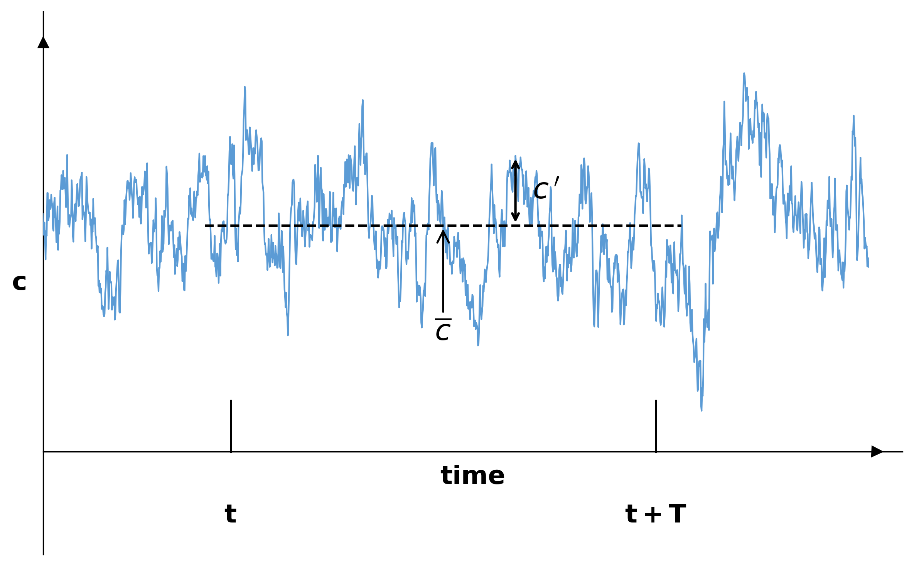
Similarly for w, v, and c:
Substituting these into the 3D governing equation and time averaging:
The new terms in the governing equation represent mass transport by turbulent eddies. As the intensity of turbulence increases, turbulent mass transport increases. The turbulent mass fluxes are defined as:
Using the gradient-diffusion (Fickian) approximation:
Substituting into the governing equation:
In turbulent fluids, \(E_x\), \(E_y\), and \(E_z\) >> \(D\), and \(D\) can be neglected except at interfaces where turbulence goes to zero. The turbulent diffusion coefficients can be thought of as the product of the velocity scale of turbulence and the length scale of that turbulence. These coefficients are related to the turbulent eddy viscosity. In general, these turbulent diffusion coefficients are non-isotropic and non-homogeneous.
Spatial averages across the lateral dimension of the channel of the turbulent time-averaged quantities can now be introduced:
where the double overbar is a spatial average over y and the double prime is the deviation from the spatial mean. Figures 50 and 51 illustrate the lateral average of the velocity and concentration fields, respectively.
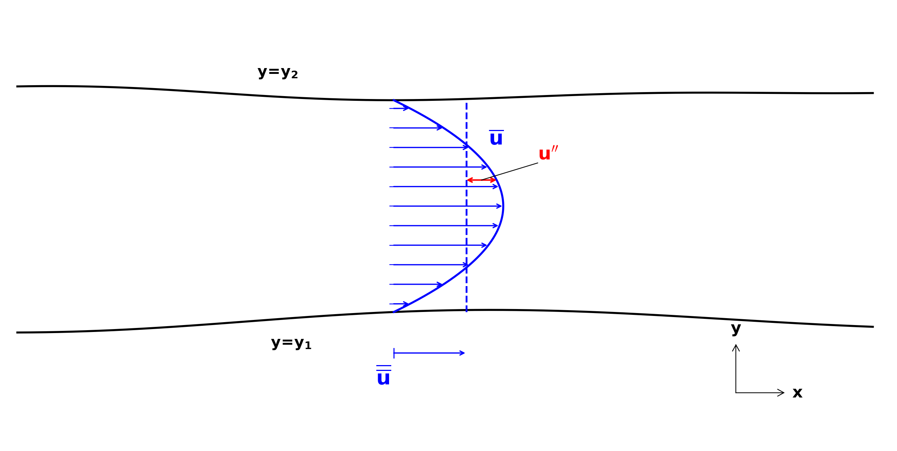
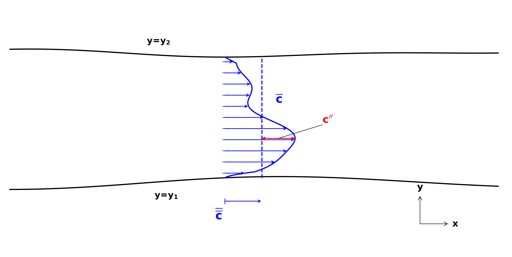
These are substituted into the governing equation and integrated over the width such that:
The terms are simplified as follows:
The spatial average of any double primed variable goes to zero by definition. The turbulent dispersion coefficients are defined as:
The dispersion terms are a result of lateral averaging of the velocity field. In general, except at an interface, \(D_x\) >> \(E_x\) >> \(D\) and similarly for \(D_z\) >> \(E_z\) >> \(D\). Substituting the dispersion coefficients and using \(q\) to be the net mass transport from lateral boundaries, the equation becomes:
If the overbars are dropped and replaced with capitals, c is replaced with \(\Phi\), then the following equation is obtained:
where:
- \(\Phi\) = laterally averaged constituent concentration, g m⁻³
- \(D_x\) = longitudinal temperature and constituent dispersion coefficient, m² s⁻¹
- \(D_z\) = vertical temperature and constituent dispersion coefficient, m² s⁻¹
- \(q_\Phi\) = lateral inflow or outflow mass flow rate of constituent per unit volume, g m⁻³ s⁻¹
- \(S_\Phi\) = laterally averaged source/sink term, g m⁻³ s⁻¹
Note that this can be concentration or temperature since the concentration of heat can be determined to be \(\rho c_p T\) where \(\rho\) is the fluid density, \(c_p\) is the specific heat of water, and T is the temperature. In this case the source-sink term for temperature would be \(S_T = -\frac{\partial \varphi}{\partial z}\) where \(\varphi\) is the heat flux in units of W m⁻².
The following must be known in order to solve the equation:
- Laterally averaged velocity field from the momentum equations
- Appropriate boundary and initial conditions
- \(D_x\) and \(D_z\)
- Laterally averaged source/sink terms
Determination of \(D_z\) and \(D_x\)¶
The specification of \(D_x\), the longitudinal dispersion coefficient, is a user-defined input. The preprocessor does a check on the magnitude of this value by computing \(D_x\) based on an approach by Okubo (1971):
where \(D_x\) is in m²/s and the longitudinal grid spacing \(\Delta x\) is in m. \(D_x\) can also be set to be a function of the mean velocity or this value can be space and time invariant. \(D_x\) can be computed dynamically using:
where \(\beta\) is a user input value and \(\overline{\overline{U}}\) is the time-averaged, laterally averaged longitudinal velocity at a segment and layer. Hence, the dispersion coefficient scales with the average longitudinal velocity.
\(D_z\) is internally computed within the CE-QUAL-W2 model using the Reynolds analogy, where \(D_z\) is computed from \(A_z\), the vertical eddy viscosity, from:
Temperature Auxiliary Functions¶
Heat Exchange¶
Surface Heat Exchange¶
The surface heat exchange is treated as a flux boundary condition at the water surface. Surface heat exchange can be formulated as a term-by-term process (see Figure 52) using the explicit adjacent cell transport computation as long as the integration timestep is shorter than or equal to the frequency of the meteorological input. Surface heat exchange processes depending on water surface temperatures are computed using computations from the prior time step.
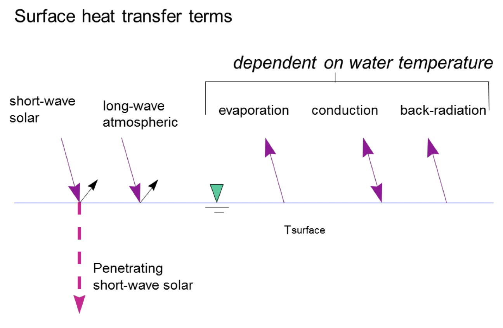
Term-by-term surface heat exchange is computed as:
where:
- \(\phi_n\) = net surface heat flux, W m⁻²
- \(\phi_s\) = incoming short-wave solar radiation, W m⁻²
- \(\phi_{sr}\) = reflected short-wave solar radiation, W m⁻²
- \(\phi_{sn}\) = net short-wave solar radiation, \(\phi_s - \phi_{sr}\), W m⁻²
- \(\phi_a\) = incoming long-wave atmospheric radiation, W m⁻²
- \(\phi_{ar}\) = reflected atmospheric long-wave radiation, W m⁻²
- \(\phi_{br}\) = back long-wave radiation, W m⁻²
- \(\phi_e\) = evaporative heat loss, W m⁻²
- \(\phi_c\) = conductive heat loss, W m⁻²
The short-wave solar radiation is either measured directly or computed from sun angle relationships and cloud cover. Annear and Wells (2007) provide an overview of formulae for short-wave solar radiation. If the model user chooses the internally computed short-wave solar, the model computes the net clear sky solar radiation \(\phi_s\) (net short-wave solar radiation in Btu/ft²/day) using the EPA (1971) relationship:
Note that this equation includes the average reflection loss of short-wave solar radiation. The solar altitude \(A_o\) (degrees) is calculated from Equation 4-15. Cloud cover reduction of clear sky solar radiation uses the relationship (Wunderlich, 1972): \(\phi_{s,net} = \phi_{s,clearsky}(1 - 0.65C^2)\) where C is the cloud cover fraction between 0 and 1.
The long-wave atmospheric radiation, \(\phi_a\), is computed from air temperature and cloud cover using Brunt's formula (Figure 53): \(\varphi_a = \varepsilon\sigma T^{*4}\) where \(\varepsilon\) is the average emittance of atmosphere, \(\sigma\) is the Stefan-Boltzmann constant (5.62 x 10⁻⁸ W m⁻² °K⁻⁴), and \(T^*\) is air temperature in absolute scale (°K). The model uses the clear sky formulae of Swinbank (1963): \(\varphi_{ac} = 5.31 \times 10^{-13}(T_a + 273)^6\). Below 5 °C the formula of Idso and Jackson (1969) is used: \(\varphi_{ac} = \sigma(T_a + 273)^4(1 - 0.261\exp[-7.77 \times 10^{-4}T_a^2])\). The effect of clouds is: \(\phi_a = \phi_{ac}(1 + kC^2)\) where k = 0.17 (average). The reflection is assumed to be 3%, i.e., \(\phi_{an} = 0.97\phi_a\).
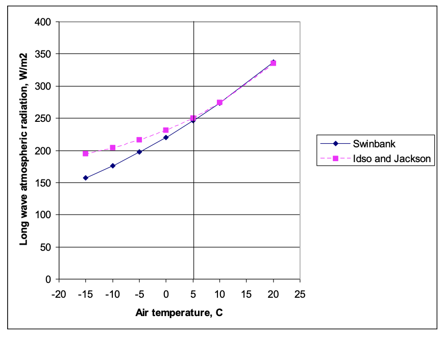
Water surface back radiation is computed as:
where \(\varepsilon\) = emissivity of water (0.97), \(\sigma\) = Stefan-Boltzmann constant (5.67 x 10⁻⁸ W m⁻² °K⁻⁴), and \(T_s\) = water surface temperature (°C).
Evaporative heat loss is computed as:
where \(f(W_z)\) is the evaporative wind speed function (W m⁻² mmHg⁻¹), \(e_s\) is saturation vapor pressure at the water surface (mmHg), and \(e_a\) is atmospheric vapor pressure (mmHg).
Surface heat conduction is computed as:
where \(C_c\) = Bowen's coefficient (0.47 mmHg °C⁻¹) and \(T_a\) = air temperature (°C).
Short-wave solar radiation penetrates the surface and decays exponentially with depth according to Beer's Law (see Figure 54):
where \(\phi_s(z)\) = short-wave radiation at depth z (W m⁻²), \(\beta\) = fraction absorbed at the water surface, \(\eta\) = extinction coefficient (m⁻¹), and \(\phi_{sn}\) = net short-wave solar radiation reaching the surface (W m⁻²).
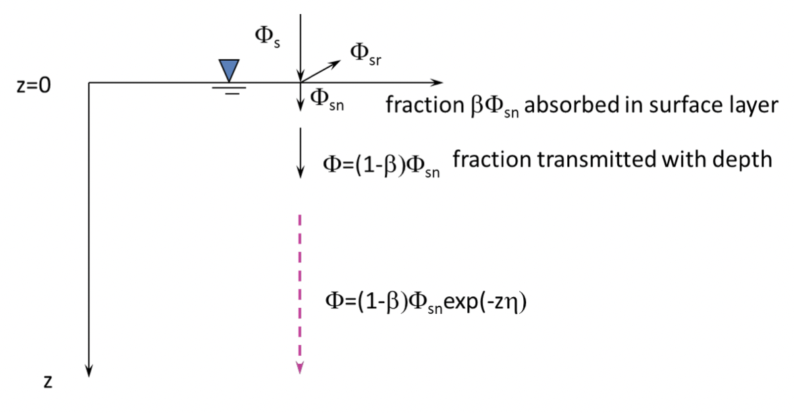
Evaporation Models for f(W)¶
The evaporative wind speed function, \(f(W_z)\), chosen by the model user can affect surface temperatures especially in the summer. Various formulations of \(f(W_z)\) have been catalogued and examined in Edinger et al. (1974). The model user can include different evaporation formulations using:
where \(a\) = 9.2 (default), \(b\) = 0.46 (default), \(c\) = 2 (default), and \(W_z\) = wind speed measured at 2 m (m s⁻¹). The wind height conversion uses:
where \(z_0\) = wind roughness height. Typical roughness values: 0.001 m for wind < 2.3 m/s and 0.005 m for wind > 2.3 m/s. The Ryan-Harleman (1974) formulation is: \(f(W_z) = a + bW_z\) (Eq. 4-31). A comparison of wind speed formulations is shown in Figure 55 where \(b\) = 4.1 W m⁻² mmHg⁻¹ m⁻¹ s⁻¹, \(a = \lambda(T_v - T_{av})^{1/3}\), and \(\lambda\) = 3.59 W m² mmHg °C⁻¹/³. For Lake Hefner, \(a\) = 0 and \(b\) = 4.99.
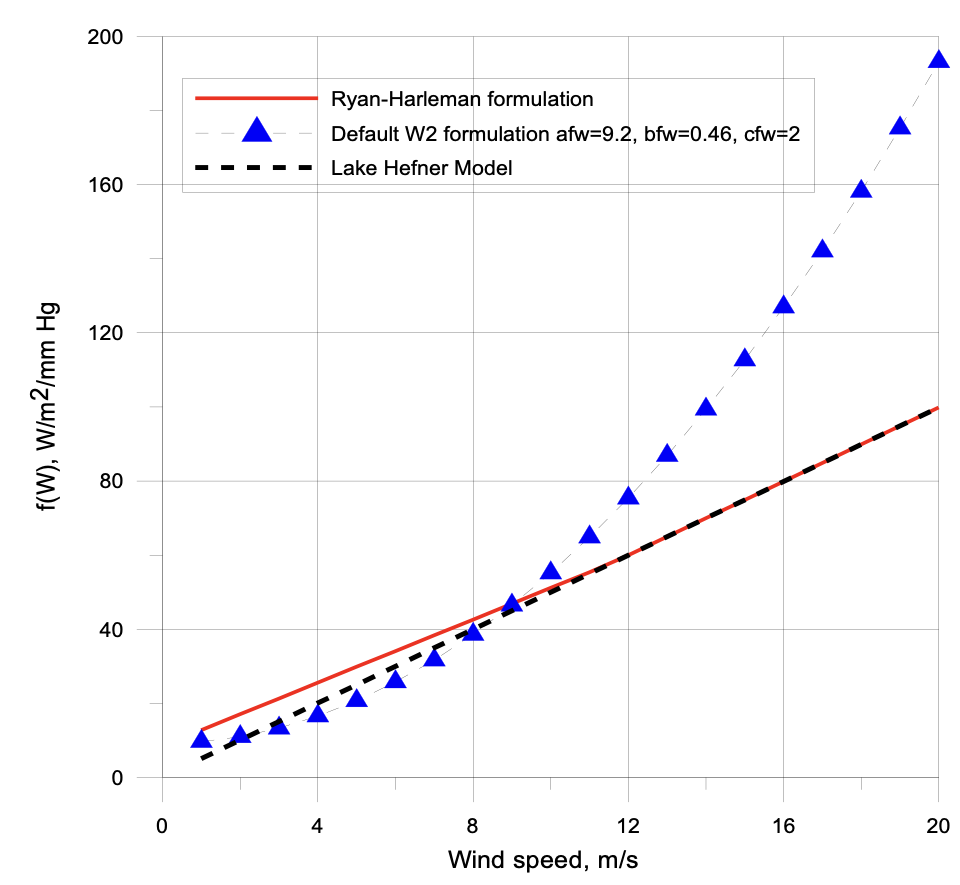
Table 6. Typical Evaporation Formulae for Lakes and Reservoirs
| Name | Time | Waterbody | \(\phi_e\) | f(W) | Remarks |
|---|---|---|---|---|---|
| Lake Hefner | 3 hrs and day | Lake Hefner, OK, 2587 acres | 17.2W₂(e_s-e₂) | 5.06W₂ | good agreement with lake observations from several lakes in US and Russia |
| Kohler | day | Lake Hefner OK, 2587 acres | 17.5W₂(e_s-e₂) | 5.14W₂ | essentially the same as Lake Hefner formula |
| Zaykov | - | ponds and small reservoirs | (1.3+14W₂)(e_s-e₂) | 0.1708+4.11W₂ | based on Russian work |
| Meyer | month | small lakes and reservoirs | (80+10W₂)(e_s-e₂) | 10.512+2.94W₂ | e_a from mean morning and evening measurements |
| Morton | month | Class A pan | (73.5+14.7W₂)(e_s-e₂) | 9.658+4.32W₂ | meteorological stations |
| Rohwer | day | pans, 85 ft dia tank, 1300 acre reservoir | (67+10W₂)(e_s-e₂) | 8.8+2.94W₂ | extensive pan measurements |
Equilibrium Temperature¶
The equilibrium temperature, \(T_E\), is defined as the temperature at which the net rate of surface heat exchange is zero (see Figure 56).
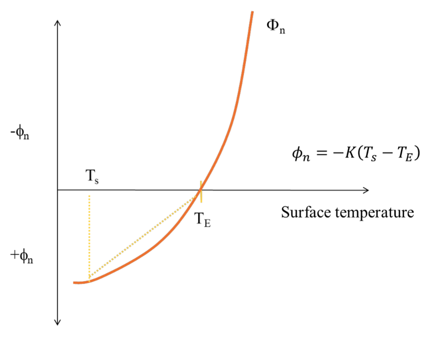
The net rate of surface heat exchange is expressed as:
where:
- \(\phi_n\) = net rate of surface heat exchange, W m⁻²
- \(K\) = coefficient of surface heat exchange, W m⁻² °C⁻¹
- \(T_s\) = water surface temperature, °C
- \(T_E\) = equilibrium temperature, °C
Seven separate heat exchange processes are summarized in the coefficient of surface heat exchange and equilibrium temperature. The linearization is examined in detail by Brady, et al. (1969) and Edinger et al. (1974). \(T_E\) can be computed from the heat flux equation where \(\phi_n\) = 0 or using the approximate technique (Brady et al., 1969). \(K\) can be computed from the slope of net flux vs temperature or using the approximate formula (Brady et al., 1969): \(K = 23 + (\beta_w + 0.255)17W_2\) where \(\beta_w = 0.255 - 0.0085T_w + 0.000204T_w^2\).
Sediment Heat Exchange¶
Sediment heat exchange with water is generally small compared to surface heat exchange and many previous modelers have neglected it. Investigations on several reservoirs have shown the process must be included to accurately reproduce hypolimnetic temperatures. The formulation is similar to surface heat exchange:
where:
- \(H_{sw}\) = rate of sediment/water heat exchange, W m⁻²
- \(K_{sw}\) = coefficient of sediment/water heat exchange, W m⁻² °C⁻¹
- \(T_w\) = water temperature, °C
- \(T_s\) = sediment temperature, °C
The sediment heat exchange process is illustrated in Figure 57. The variable \(K_{sw}\) is defined as \(\left[\frac{\rho c_p D}{L}\right]\) where D is the diffusion coefficient, \(\rho\) is the density, \(c_p\) is the coefficient of specific heat, and L is a length scale (typically the distance between the water cell center and sediment cell layer).
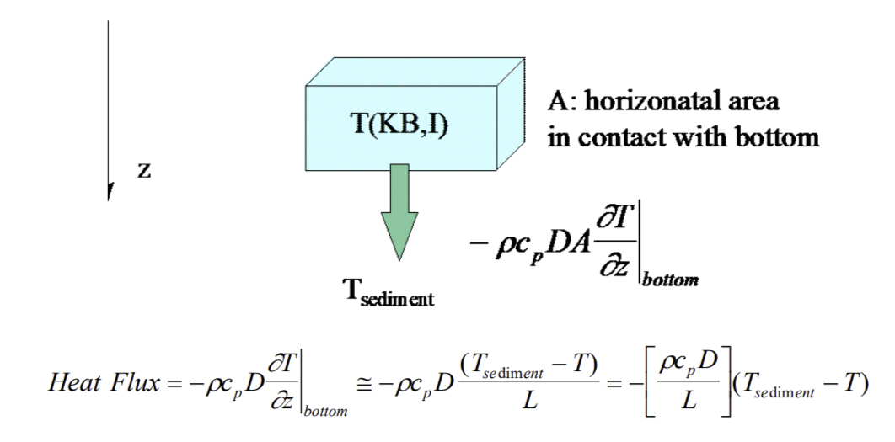
Previous applications used a value of 0.3 W m⁻² °C⁻¹ for \(K_{sw}\). Average yearly air temperature has been used as an estimate of \(T_s\) (Todd, 1980). The default model value shown in Part 3 was 0.3 W m⁻² °C⁻¹.
Table 7. Model parameters for sediment heating.
| Reference | Thermal diffusivity, D | \(\rho_s c_{ps}\) for sediment | Description |
|---|---|---|---|
| Fang and Stefan (1998) | 0.035 m²/d | 2.3E6 J m⁻³ °C⁻¹ | Lake sediment study, determined by calibration |
| Fang and Stefan (1998) | 0.01 to 0.11 m²/d | 1.4E6 to 3.8E6 J m⁻³ °C⁻¹ | Literature reported range |
| Silliman et al. (1995) | 0.0046 cm²/s | 0.5 cal cm⁻³ °C⁻¹ | |
| Jobson (1977) | 0.01 cm²/s | 0.55 cal cm⁻³ °C⁻¹ | Concrete lined channel |
| Jobson (1977) | 0.0077 cm²/s | 0.68 cal cm⁻³ °C⁻¹ | Sand bed |
| Chen et al. (1998) | 0.0118 cm²/s | 1.491E6 J m⁻³ °C⁻¹ | Homogeneous rock |
| Kim and Chapra (1997) | 3E-7 m²/s | Sand, density 1750 kg m⁻³ | |
| Kim and Chapra (1997) | 9E-7 m²/s | Stone, dry, density 2500 kg m⁻³ |
Dynamic Shading¶
Solar Altitude and Azimuth¶
The solar altitude and azimuth geometry is shown in Figure 58. The declination angle, \(\delta\), is computed from Spencer (1971) using Equation 4-34 (same form as Eq. 4-21). The local hour is \(HOUR = 24(JD_r - JD_i)\) (Eq. 4-35). The equation of time correction is \(EQT = 0.17\sin\frac{4\pi(JD_i - 80)}{373} - 0.129\sin\frac{2\pi(JD_i - 8)}{355}\) (Eq. 4-36). The local hour angle is:
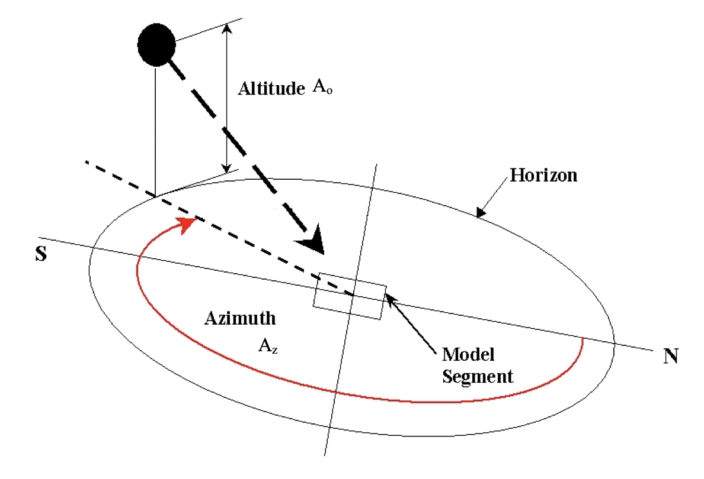
The solar altitude, \(A_o\), is calculated from Wunderlich (1972):
The solar azimuth is computed as (Nautical Almanac, 2001):
If \(X > 1\), \(X = 1\); if \(X < -1\), \(X = -1\) (Eq. 4-40). Then \(A = A\cos X\) (Eq. 4-41) and \(AZ = 2\pi - A\); if \(H < 0\), \(AZ = A\) (Eq. 4-42). Figure 59 illustrates the relationship between topographic and vegetative shading and solar altitude.
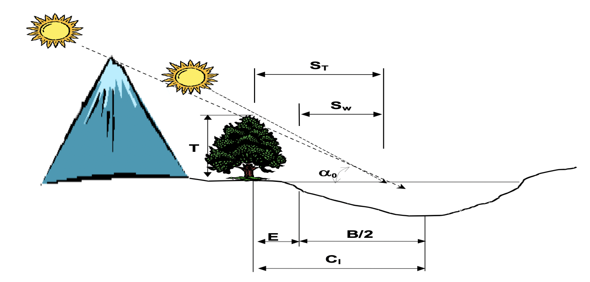
Topographic Shading¶
The algorithm uses the position of the sun to determine which topographic inclination angle coincides with the direction of incoming solar radiation. The algorithm determines the closest two inclination angles and linearly interpolates for the specific solar direction. If the solar altitude is below the calculated topographic inclination angle, then topographic shading dominates and the short-wave solar radiation is reduced by 90% for complete shade. This allows for 10% of the incoming solar radiation as diffuse radiation even when in the shade.
Vegetative Shading¶
If the topographic angle is less than the solar altitude, vegetative shade dominates. The tree shadow length, \(S_T\), is calculated as:
Simplifying: \(S_N = \frac{T \times \sin(\theta_0 - \alpha_A)}{\tan A_0} - E\) (Eq. 4-46). The shade factor is:
The azimuth angle and stream orientation are shown in Figures 60 and 61.
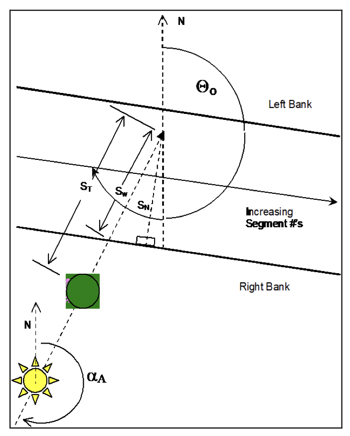
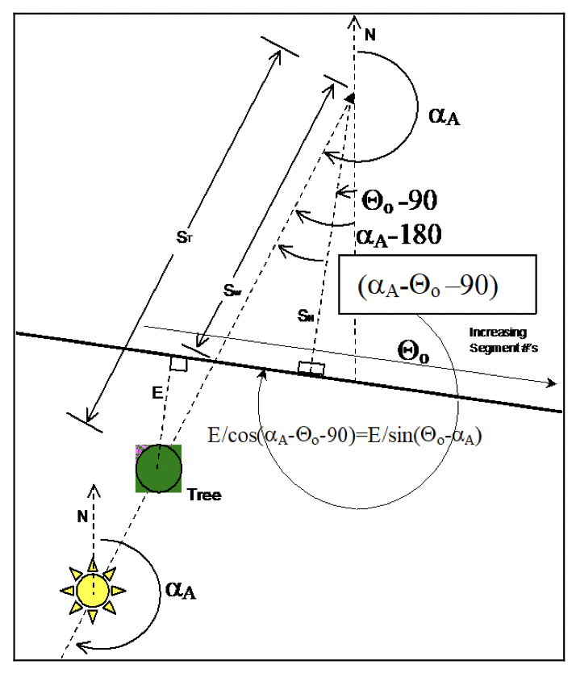
Data Requirements¶
The shade algorithm reads in 18 topographic inclination angles surrounding each segment center-point. The first inclination angle is taken from directly North of a segment (orientation angle 0.0) and moves clockwise to the East with increasing orientation angles in 20° increments. The user can specify dynamic shading reduction factors as a function of time for leaf growth and fall for deciduous trees.
Table 8. Criteria for determining sunward bank
| Sunward Bank | \(0° < \theta_0 \leq 180°\) | \(180° < \theta_0 \leq 360°\) |
|---|---|---|
| Left | \(\alpha_A < \theta_0\) or \(\alpha_A > \theta_0 + 180°\) | \(\theta_0 - 180° < \alpha_A < \theta_0\) |
| Right | \(\theta_0 < \alpha_A < \theta_0 + 180°\) | \(\alpha_A > \theta_0\) or \(\alpha_A < \theta_0 - 180°\) |
Dynamic shading requires segment-specific data including:
- Topographic shade angles (18 per segment)
- Vegetation characteristics: tree height, crown width, distance from bank, and canopy density
- Model segment orientation (azimuth)
These data are specified in the shade input file.
Ice Cover¶
Ice thickness, onset, and loss of ice cover play an important role in the heat budget of northern waterbodies. At high latitudes, ice cover may remain until late spring or early summer and prevent warming due to absorption of short-wave solar radiation.
The ice model is based on an ice cover with ice-to-air heat exchange, conduction through the ice, conduction between underlying water, and a "melt temperature" layer on the ice bottom (Ashton, 1979). The overall heat balance for the water-to-ice-to-air system is:
where:
- \(\rho_i\) = density of ice, kg m⁻³
- \(L_f\) = latent heat of fusion of ice, J kg⁻¹
- \(\Delta h/\Delta t\) = change in ice thickness (h) with time (t), m s⁻¹
- \(h_{ai}\) = coefficient of ice-to-air heat exchange, W m⁻² °C⁻¹
- \(h_{wi}\) = coefficient of water-to-ice heat exchange through the melt layer, W m⁻² °C⁻¹
- \(T_i\) = ice temperature, °C
- \(T_e\) = equilibrium temperature of ice-to-air heat exchange, °C
- \(T_w\) = water temperature below ice, °C
- \(T_m\) = melt temperature, 0 °C
Ice temperature in the ice-heat balance is computed by equating the rate of surface heat transfer between ice and air to the rate of heat conduction through ice:
where \(k_i\) = molecular heat conductivity of ice, W m⁻¹ °C⁻¹.
When solved for ice temperature, \(T_i\), and inserted in the overall ice-heat balance, the ice thickness relationship becomes:
Initial Ice Formation¶
Formation of ice requires lowering the surface water temperature to the freezing point by normal surface heat exchange processes. The negative water surface temperature is then converted to equivalent ice thickness:
where:
- \(\theta_0\) = thickness of initial ice formation during a timestep, m
- \(T_{wn}\) = local temporary negative water temperature, °C
- \(h\) = layer thickness, m
- \(\rho_w\) = density of water, kg m⁻³
- \(C_{P_w}\) = specific heat of water, J kg⁻¹ °C⁻¹
- \(\rho_i\) = density of ice, kg m⁻³
- \(L_f\) = latent heat of fusion, J kg⁻¹
Air-Ice Flux Boundary Condition and Ice Surface Temperature Approximation¶
The ice surface temperature, \(T_s\), must be known to calculate the heat components, \(H_{br}\), \(H_e\), \(H_c\), and the thermal gradient in the ice. The approximate value for \(T_s\) is obtained by linearizing the ice thickness across the timestep and solving for \(T_s\):
The heat flux through the ice is:
where \(K_i\) = thermal conductivity of ice (W m⁻¹ °C⁻¹), \(T_f\) = freezing point temperature (°C), and \(\theta\) = thickness of ice (m).
Absorbed Solar Radiation by Water Under Ice¶
The amount of solar radiation absorbed by water under the ice cover may be expressed as:
where:
- \(H_{ps}\) = solar radiation absorbed by water under ice cover, W m⁻²
- \(H_s\) = incident solar radiation, W m⁻²
- \(ALB_i\) = ice albedo
- \(\beta_i\) = fraction of the incoming solar radiation absorbed in the ice surface
- \(\gamma_i\) = ice extinction coefficient, m⁻¹
Ice Melt at Air-Ice Interface¶
Stored energy used for melting ice is expressed as:
where \(C_{pi}\) = specific heat of ice (J kg⁻¹ °C⁻¹) and \(\theta_{ai}\) = ice melt at the air-ice interface (m⁻¹).
Ice-Water Flux Boundary Condition¶
Both ice growth and melt may occur at the ice-water interface. An imbalance between the fluxes provides a mechanism for freezing or melting:
The heat flux at the ice-water interface is:
Ice growth or melt at the ice-water interface is:
Freezing Temperature of Ice¶
In general, the temperature at which water freezes, \(T_f\), is set to 0 °C for fresh water. If the model is set to SALT (see WTYPEC input), the freezing temperature is affected by the salinity. For TDS < 35 ppt:
For TDS > 35 ppt:
Gain and Loss of Water¶
As ice forms, water is removed from the waterbody (Figure 62). There is a removal of 0.917 m³ of water for every 1 m³ of ice formed. The reverse occurs as ice melts and comes back into the water body. The model does not account for ablation nor on snow accumulation.
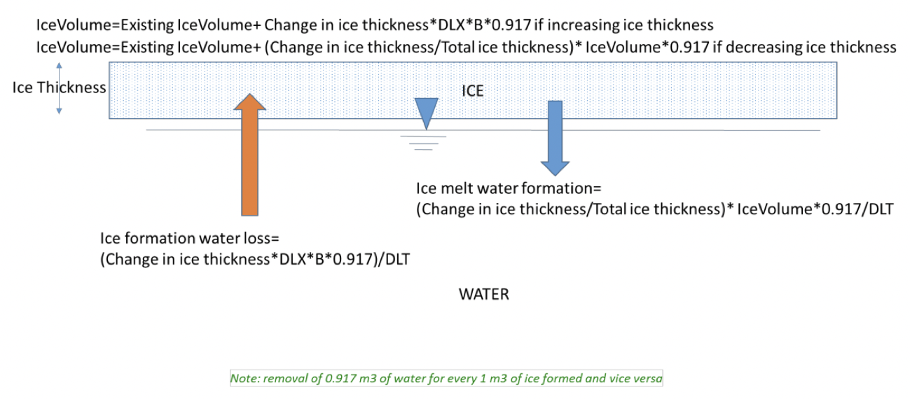
Overview of Kinetic Source/Sink Term¶
In order to solve the 2D advection-diffusion equation, the source/sink term, \(S_\Phi\), must be specified. The model solves for temperature and a user-specified number of water quality variables. Water quality state variables along with their kinetic source/sink terms are shown in Table 9. The user can specify any number of generic constituents [NGC], suspended solids groups [NSS], CBOD groups [NBOD], algal groups [NAL], macrophyte groups [NMC], zooplankton groups [NZP], and periphyton/epiphyton groups [NEP].
Table 9. CE-QUAL-W2 Water Quality State Variables.
| Constituent | Internal Source | Internal Sink |
|---|---|---|
| Total dissolved solids | ||
| Generic constituent, no interactions with other state variables | ||
| Bacteria | settling | |
| Tracer | 0 and 1st order increase | 0 and 1st order decay |
| Water age | reaeration | gas transfer (volatilization) |
| Contaminants | photodegradation | |
| N₂ gas (Total Dissolved Gas) | ||
| Volatile contaminant | ||
| Inorganic suspended solids | sedimentation | |
| Bioavailable P measured as one of the following: ortho-P, dissolved P, SRP | algal/epiphyton respiration; labile/refractory particulate/dissolved organic matter; sediment release; CBOD decay | algal/epiphyton growth; adsorption onto inorganic suspended solids |
| Ammonium | sediment release; algal/epiphyton/macrophyte excretion; labile/refractory dissolved/particulate organic matter decay; CBOD decay | algal/epiphyton/macrophyte growth; nitrification |
| Nitrate-nitrite | nitrification | denitrification; algal/epiphyton/macrophyte growth |
| Dissolved silica | anoxic sediment release; particulate biogenic silica decay | algal/epiphyton growth; adsorption onto suspended solids |
| Particulate biogenic silica | algal/epiphyton mortality | settling; decay |
| Iron and Mn | anoxic sediment release | oxic water column settling |
| Labile dissolved organic matter | algal/epiphyton/macrophyte mortality; excretion | decay |
| Refractory dissolved organic matter | labile dissolved organic matter decay | decay |
| Labile particulate organic matter | algal/epiphyton/macrophyte mortality | settling; decay |
| Refractory particulate organic matter | labile particulate organic matter decay | settling; decay |
| Total P in labile dissolved organic matter | algal/epiphyton/macrophyte mortality; excretion | decay |
| Total P in refractory dissolved organic matter | labile dissolved organic matter decay | decay |
| Total P in labile particulate organic matter | algal/epiphyton/macrophyte mortality | settling; decay |
| Total P in refractory particulate organic matter | labile particulate organic matter decay | settling; decay |
| Total N in labile dissolved organic matter | algal/epiphyton/macrophyte mortality; excretion | decay |
| Total N in refractory dissolved organic matter | labile dissolved organic matter decay | decay |
| Total N in labile particulate organic matter | algal/epiphyton/macrophyte mortality | settling; decay |
| Total N in refractory particulate organic matter | labile particulate organic matter decay | settling; decay |
| CBOD | decay; settling | |
| CBOD-P (Total P in organic matter represented by CBOD) | decay; settling | |
| CBOD-N (Total N in organic matter represented by CBOD) | decay; settling | |
| Algae | algal growth | respiration; excretion; mortality; settling |
| Algae toxins, intracellular | internal toxin production | leakage and decay |
| Algae toxins, extracellular | leakage of intracellular toxin | decay |
| Epiphyton (periphyton) | epiphyton (periphyton) growth | respiration; excretion; mortality; settling |
| Zooplankton | zooplankton growth | transport; settling; excretion; mortality |
| Macrophytes | macrophyte growth | respiration; mortality; excretion |
| Dissolved oxygen | surface exchange; algal/epiphyton (periphyton) growth | surface exchange; algal/epiphyton/macrophyte/zooplankton respiration; nitrification; CBOD decay; 0 and 1st order SOD; labile/refractory dissolved/particulate organic matter decay |
| Total inorganic carbon | labile/refractory dissolved/particulate organic matter decay; sediment release; surface exchange; algal respiration | surface exchange; algal/epiphyton (periphyton) growth; CBOD decay |
| Alkalinity | [dynamic alkalinity can also be computed based on biological reactions; otherwise it is treated as conservative] | |
| Methane | sediment diagenesis | surface exchange |
| Hydrogen sulfide | sediment diagenesis | surface exchange |
| Mature fine tailings (about 70% water and 30% fine clay; can take centuries to consolidate; from oil sands mining operation; another inorganic suspended solids group) | consolidation | |
| Sediment (1st order sediment model) | settling of algae, LPOM, RPOM, epiphyton burial | decay; focusing of sediments |
| Sediment diagenesis model with state variables in the sediment | organic matter settling to the sediment and sediment diagenesis | release to overlying water (C, N, P) |
In addition to these water quality state variables, the model also solves for pH and the carbonate cycle (CO₂, HCO₃, H₂CO₃) as part of the set of derived water quality variables.
The source/sink term [CSSK] represents a mass rate of change (model code internal units of g m⁻³ s⁻¹) of a constituent due to kinetic reactions where concentrations are expressed as g m⁻³ or mg/L. All rate inputs from the control file are in units of day⁻¹ and are then converted to s⁻¹ before being used in the code. The sources/sinks for constituents are separated into two arrays, [CSSB] and [CSSK]. [CSSB] contains boundary sources/sinks. [CSSK] contains internal sources/sinks due to kinetic interactions. The frequency at which kinetic sources/sinks [CSSK] are updated is specified by the parameter [CUF].
The model can simulate any combination of the following constituent groups:
- Generic constituents (conservative tracers, volatile substances)
- Bacteria
- Dissolved gases (N₂, total dissolved gas)
- Water age or residence time
- CH₄, H₂S, SO₄
- Fe²⁺, FeOOH, Mn²⁺, MnO₂
- Inorganic suspended solids (ISS)
- Total dissolved solids (TDS) or salinity
- Dissolved organic matter (labile DOM, refractory DOM)
- Particulate organic matter (labile POM, refractory POM)
- Organic matter variable stoichiometry (LDOM-P, RDOM-P, LPOM-P, RPOM-P, LDOM-N, RDOM-N, LPOM-N, RPOM-N)
- Organic carbon constituents (LPOC, RPOC, LDOC, RDOC)
- Carbonaceous biochemical oxygen demand (CBOD, CBODP, CBODN)
- Algae (multiple groups with vertical migration and toxin production)
- Periphyton/Epiphyton
- Macrophytes
- Zooplankton
- Phosphorus (PO₄)
- Ammonium (NH₄)
- Nitrate-Nitrite (NO₃ + NO₂)
- Dissolved silica, Particulate biogenic silica
- Dissolved oxygen (including reaeration)
- Organic sediments (zero-order and first-order models)
- Sediment variable stoichiometry (P, N, C)
- Sediment diagenesis model
- Total inorganic carbon, alkalinity, pH, and carbonate species
- Temperature rate multipliers
Generic Constituent¶
Any number of generic constituents [NGC] can be defined (Figure 63) that can settle, decay (using either zero order and/or first order decay and/or photochemical reactions), transfer across the air/water interface, and/or be released from the sediment during anoxic conditions (just for the zero order SOD model). Generic constituents do not interact with the hydrodynamics nor any other water quality state variables.
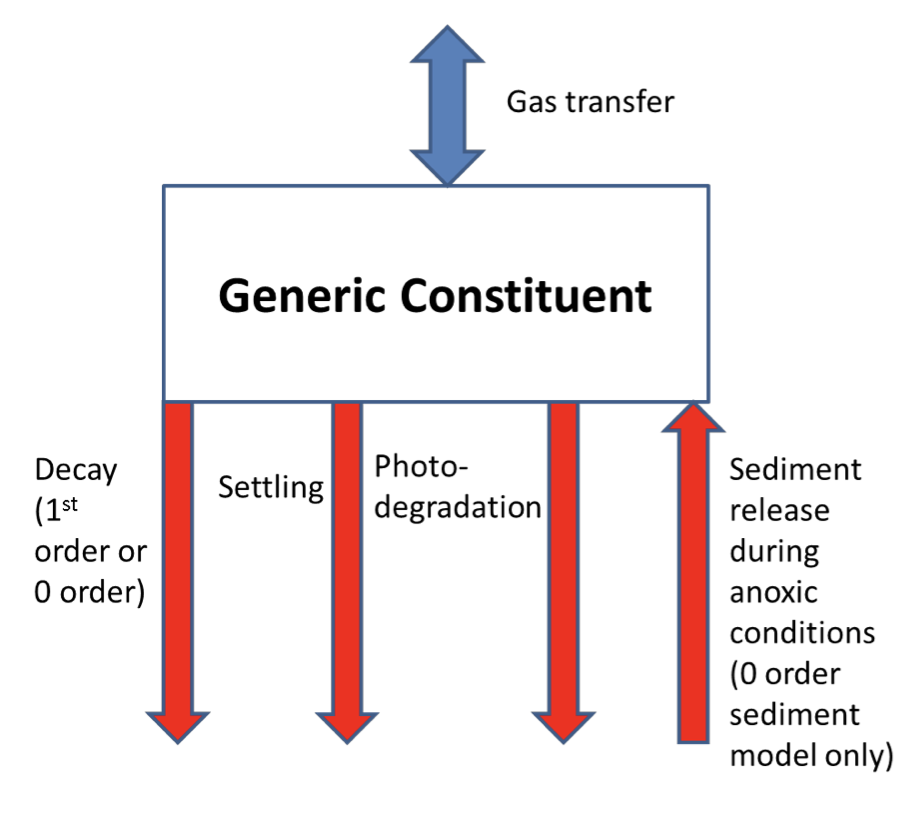
The source/sink term for a generic constituent is:
where:
- \(\theta\) = temperature rate multiplier
- \(T\) = water temperature, °C
- \(\alpha\) = photodegradation parameter, m²/J
- \(I_o\) = radiation at surface, W m⁻²
- \(\lambda\) = light extinction coefficient, m⁻¹
- \(\beta\) = fraction of short-wave solar absorbed on the surface
- \(\omega_g\) = settling velocity, m s⁻¹
- \(K_0\) = zero order decay coefficient, g m⁻³ s⁻¹ at 20 °C
- \(K_1\) = first order decay coefficient, s⁻¹ at 20 °C
- \(\Phi_g\) = generic constituent concentration, g m⁻³
- \(\Phi_s\) = generic constituent concentration gas saturation in the atmosphere, g m⁻³
- \(A_{sur}\) = surface area, m²
- \(V_{sur}\) = surface volume, m³
- \(A\) = cell bottom surface area, m²
- \(V\) = cell volume, m³
- \(K_L\) = surface gas transfer coefficient, m/s
- \(K_{sedrel}\) = sediment release as a fraction of SOD (zero order model), (-)
- \(SOD\) = temperature corrected sediment oxygen demand (zero order model), m/s
Photodegradation can be an important mechanism for constituents such as fecal coliforms (Mitchell and Chamberlain, 1978; Auer and Niehaus, 1993) and dissolved organic matter (Moran and Zepp, 1996; Reche et al., 1999). The photo decay rate can be modeled as a pseudo 1st order decay (k_light) rate, as described by:
where k_light is the first-order decay coefficient (s⁻¹) and C is the constituent concentration (g/m³). Chamberlin and Mitchell (1978) defined the light-induced decay of coliforms based on Beer's Law and a proportionality constant as:
where α is the user-defined proportionality constant for the effect of incident light on a specific constituent or organism, I₀ is the incident light energy at the water surface (cal/cm²-day), λ is the light attenuation coefficient per unit depth (m⁻¹), and z is the depth below the water surface (m). Table 10 shows a selection of α values reported in the literature for coliforms (Bowie et al., 1985). The CE-QUAL-W2 model uses units of W/m² for radiation; hence the corresponding units of alpha as used in the CE-QUAL-W2 model are m²/J.
Table 10. Comparison of α estimates based on Chamberlin and Mitchell (1978) with additional values (Bowie et al., 1985).
| Organism | Study | α (cm²/cal) | α (m²/J) | Data Source |
|---|---|---|---|---|
| Coliform Group | 14 field studies (mean) | 0.481 | 1.15E-05 | Gameson and Gould (1975) |
| Coliform Group | 24 field studies (mean) | 0.168 | 4.01E-06 | Foxworthy and Kneeling (1969) |
| Coliform Group | 61 laboratory studies (mean) | 0.136 | 3.25E-06 | Gameson and Gould (1975) |
| Fecal Coliform | Estimated from field and laboratory studies (mean of salt and freshwater) | 0.042 | 1.00E-06 | Mancini (1978) |
| Fecal Coliforms | 22 chamber studies in freshwater (mean) | 0.005 | 1.19E-07 | Lantrip (1983) |
| Total Coliforms | 22 chamber studies in freshwater (mean) | 0.004 | 9.55E-08 | Lantrip (1983) |
A conservative tracer, coliform bacteria, N₂ gas (and Total Dissolved Gas), a volatile generic constituent, and water age are some of the state variables that can be modeled using the generic constituent and are described further below.
Conservative Tracer¶
A conservative constituent is included to allow dye study simulations, movements of conservative materials through the waterbody, and as an aid in calibrating and testing flow regimes. This constituent has no internal sources or sinks and the rate term [CSSK] is set to zero.
Volatile Generic Constituent¶
The loss of a volatile generic constituent, such as a hydrocarbon, by volatilization from the water surface is simulated using the same algorithms as used for N₂. The rate at which a generic constituent molecule enters and leaves the water surface is described by:
where:
- \(K_{Lg}\) = surface gas transfer coefficient for a generic constituent, m/s
- \(A_{sur}\) = surface area of the surface layer computational cell, m²
- \(Vol_{cell}\) = volume of the surface layer computational cell, m³
- \(h_{KT}\) = depth of the surface layer (K=KT) computational cell, m
- \(\phi_g\) = liquid phase generic constituent concentration, g m⁻³
- \(\phi_{sg}\) = hypothetical saturation liquid phase generic constituent concentration if in equilibrium with the gas phase, g m⁻³
The gas transfer rate coefficient can be estimated based on the reaeration rate for oxygen:
The molecular diffusion coefficients can be related to their molecular weights: \(\frac{D_g}{D_{O2}} = \sqrt{\frac{MW_{O2}}{MW_g}}\). Hence: \(K_{Lg} = K_{LO2}\left(\frac{MW_{O2}}{MW_g}\right)^{0.25} = K_{LO2} \times CGKLF\) where CGKLF is the user-defined gas transfer factor.
Table 11. CGKLF input values for hydrocarbons, CO₂, and N₂.
| Chemical | MW (g/mole) | CGKLF |
|---|---|---|
| Nitrogen | 28.01 | 1.034 |
| Carbon Dioxide | 44 | 0.923 |
| Benzene | 78.11 | 0.800 |
| MTBE | 88.15 | 0.776 |
| Toluene | 92.13 | 0.768 |
| Ethylbenzene | 106.16 | 0.741 |
Bacteria¶
Coliform bacteria are commonly used as an indicator of pathogen contamination (Figure 64). Safety standards and criteria for drinking and recreational purposes are based upon coliform concentrations.
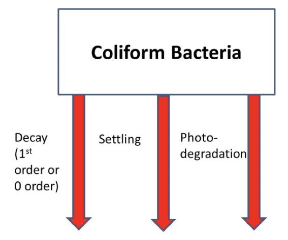
Total coliform, fecal coliform, fecal streptococci, and/or any other type of bacteria that do not interact with other state variables can be simulated. The rate equation for bacteria is (including photodegradation):
where:
- \(\theta\) = temperature factor (Q10)
- \(T\) = water temperature, °C
- \(K_{col}\) = coliform mortality rate, s⁻¹ at 20 °C
- \(\Phi_{col}\) = coliform concentration, g m⁻³
- \(\omega_{col}\) = bacteria settling velocity, m s⁻¹
- \(\alpha\) = photodegradation parameter, m²/J
- \(I_o\) = radiation at surface, W m⁻²
- \(\lambda\) = light extinction coefficient, m⁻¹
- \(\beta\) = fraction of short-wave solar absorbed on the surface
- \(z\) = water depth, m
Dissolved Nitrogen Gas and Total Dissolved Gas¶
N₂ Dissolved Gas¶
N₂ gas is a state variable and is modeled by internally computing the N₂ gas saturation as a function of temperature and air humidity and internally computing the gas transfer coefficient (for reaeration). The sink term is just gas transfer as shown in Figure 65:
where:
- \(\Phi_{N2}\) = N₂ generic constituent concentration, g m⁻³
- \(\Phi_{sN2}\) = N₂ gas saturation concentration in the atmosphere, g m⁻³
- \(A_{sur}\) = surface area, m²
- \(V_{sur}\) = surface volume, m³
- \(K_{LN2}\) = surface gas transfer coefficient for N₂, m/s
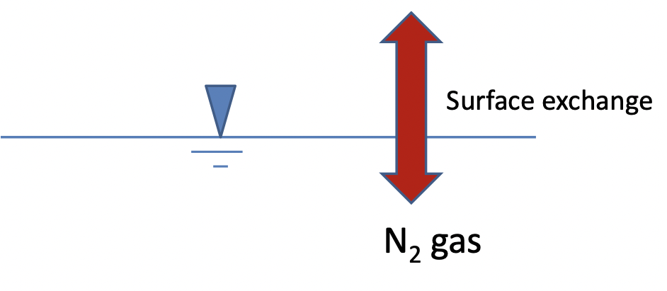
Nitrogen gas is a slightly soluble gas, like oxygen. Using the Higbie-Penetration theory (Chapra, 1997), \(K_{LN2} = K_{LO2}\sqrt{\frac{D_{N2}}{D_{O2}}}\) and since \(\frac{D_{N2}}{D_{O2}} = \sqrt{\frac{MW_{O2}}{MW_{N2}}}\), then \(K_{LN2} = K_{LO2}\left(\frac{MW_{O2}}{MW_{N2}}\right)^{0.25} = 1.034K_{LO2}\) where MWO2 = 32 g/mole and MWN2 = 28 g/mole.
The value of N₂ saturation, \(\Phi_{sN2}\), is determined using Henry's Law: \(x_{N2} = K_H P_{N2}\) where \(x_{N2}\) is the mole fraction of nitrogen gas, \(K_H\) is Henry's Law constant in moles/atm, and \(P_{N2}\) is the partial pressure of N₂ gas in the atmosphere in atm. Nitrogen gas is assumed to be 79% of the total gas composition in the atmosphere for dry air. Atmospheric pressure changes with altitude are accounted for using:
Combining with Henry's Law: \(C_{N2} = 55.6 \times 28 \times 10^3 P_{N2} K_H = 1.5568E6 \cdot P_{N2} K_H\). The Henry's Law constant is temperature dependent (Figure 66): \(K_H(\text{atm}^{-1}) = 1.8816E\text{-}005 - 4.116E\text{-}007 \times T + 4.6E\text{-}009 \times T^2\) where T is the surface temperature in °C.
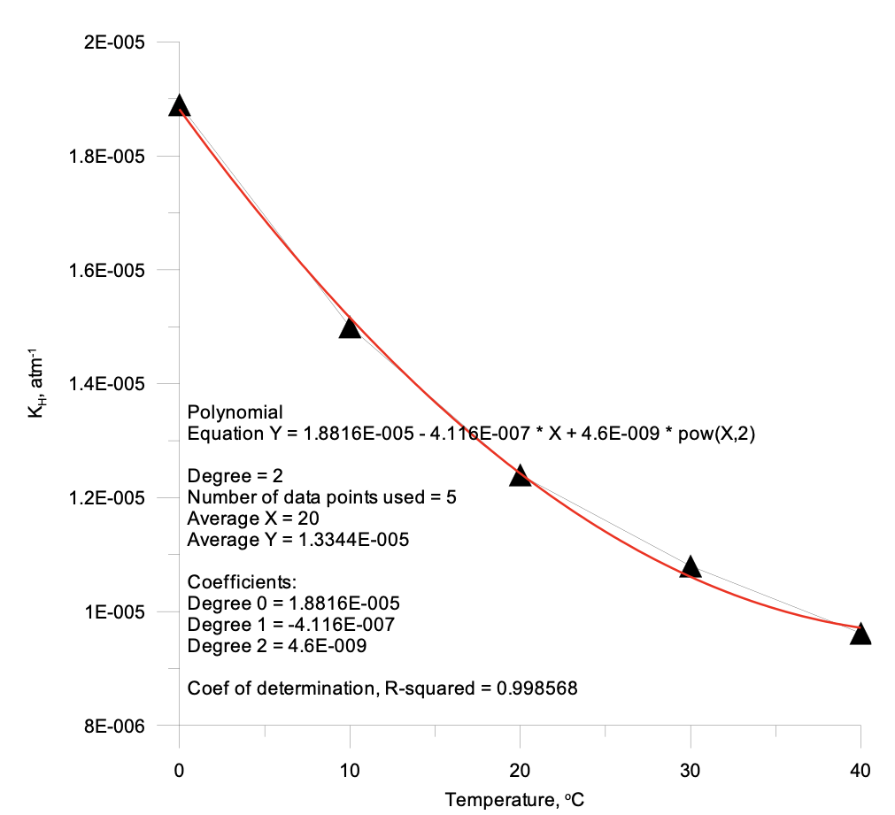
The %N₂ in the atmosphere needs to be corrected for water vapor. The vapor pressure (Figure 67) is computed using the air temperature in °C as (Chapra, 1997): \(P_{watervapor}(mmHg) = 4.596\exp\left(\frac{17.27T}{237.3+T}\right)\). Figure 68 shows the atmospheric pressure correction. The relative humidity (RH) was computed based on dew point temperature, \(T_d\), and air temperature, T: (Singh, 1992): \(RH = \left[\frac{112 - 0.1T + T_d}{112 + 0.9T}\right]^8\).
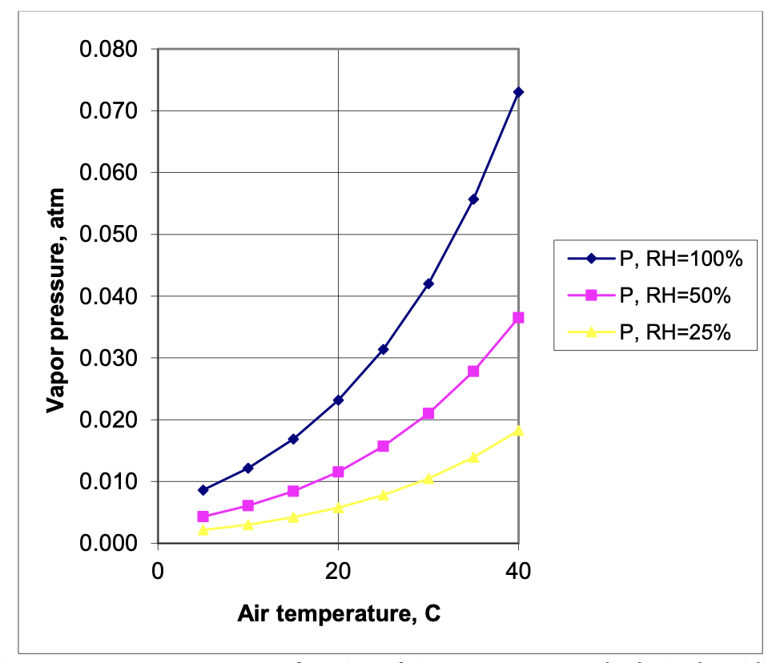
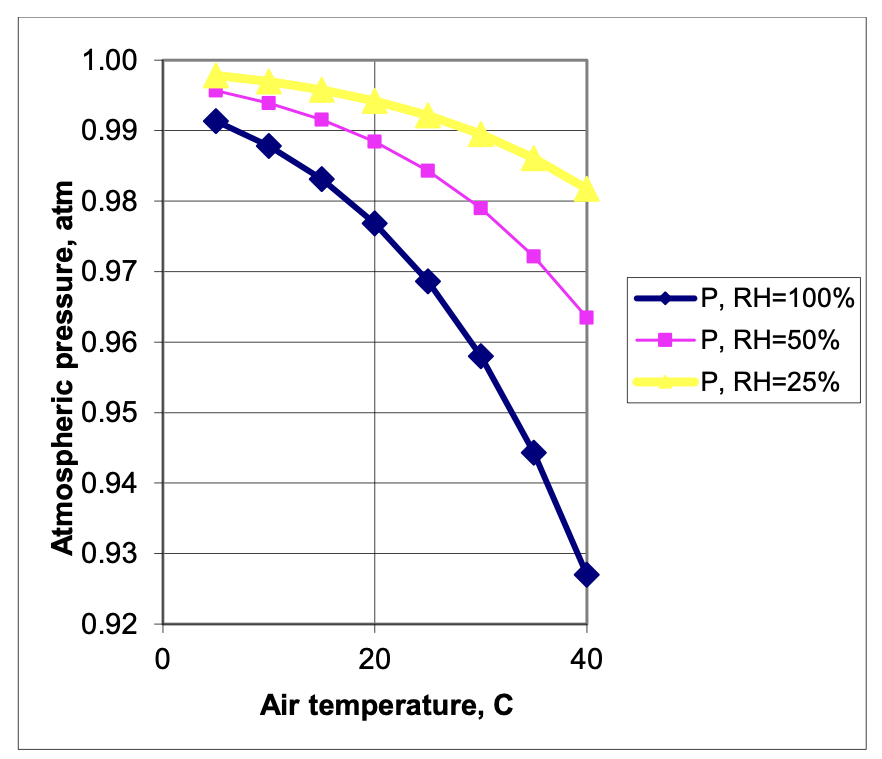
Total Dissolved Gas¶
Once N₂ gas is used in the model, the derived constituent TDG% can also be turned ON. TDG, % is computed from:
N₂ gas can be entrained at hydropower facilities and at dams. Algorithms for adding dissolved gas at these facilities is outlined under Dissolved Oxygen/Dam Reaeration.
Water Age or Residence Time¶
The water age is used to compute how long water has remained in the modeled domain. This is accomplished by using only a zero-order decay rate set to -1 day⁻¹. This results in a state variable that increases by 1 day⁻¹, which is an exact representation of water age or hydraulic residence time (Figure 69).
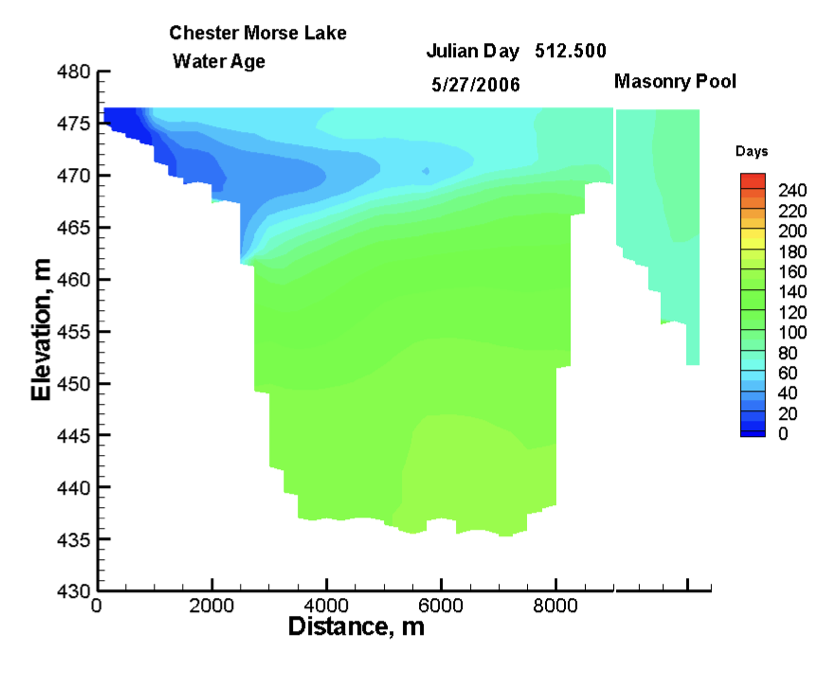
Dissolved Gas Pressure¶
The model computes dissolved gas pressure (DGP in atm) which is used to compute Total Dissolved Gas (TDG) from TDG = 100*DGP/PALT where PALT is the atmospheric pressure in atm at the water surface. This state variable can be used in lieu of using dissolved oxygen and dissolved nitrogen gas as state variables if the model user is only interested in modeling production of dissolved gas at spillways and the gas transfer downstream.
The DGP exchange at the air-water interface is modeled as a first order rate process:
where DGP is dissolved gas pressure (atm), \(P_{atm}\) is barometric pressure (atm), and \(k_{DGP}\) is the air/water gas exchange rate (d⁻¹). For lakes or estuaries: \(k_{DGP} = DGPO2\frac{K_L}{H}\) where \(K_L\) is the reaeration coefficient (m/d), H is the depth of the surface layer (m), and DGPO2 is the ratio of dissolved gas to oxygen surface transfer ratio. A typical value of DGPO2 would be 1.027 assuming 0.21 O₂ and 0.79 N₂ gas composition.
The TDG saturation can also be calculated from normalizing the DGP by the local barometric pressure: \(TDG\% = 100\frac{DGP}{P_{atm}}\).
Water Column CH₄, H₂S, SO₄¶
Methane (CH₄) and hydrogen sulfide (H₂S) constituents are state variables for the water column. CH₄ is modeled as mg/L as C. H₂S is modeled as mg/L as S. For both constituents, the anaerobic release from the sediments, aerobic decay, and reaeration were modeled (Figure 70 and Figure 71).
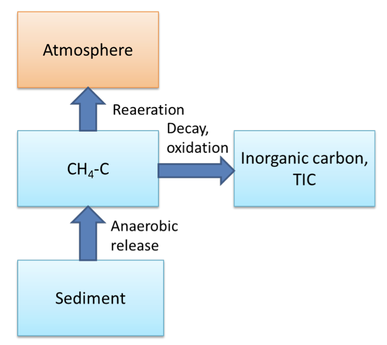
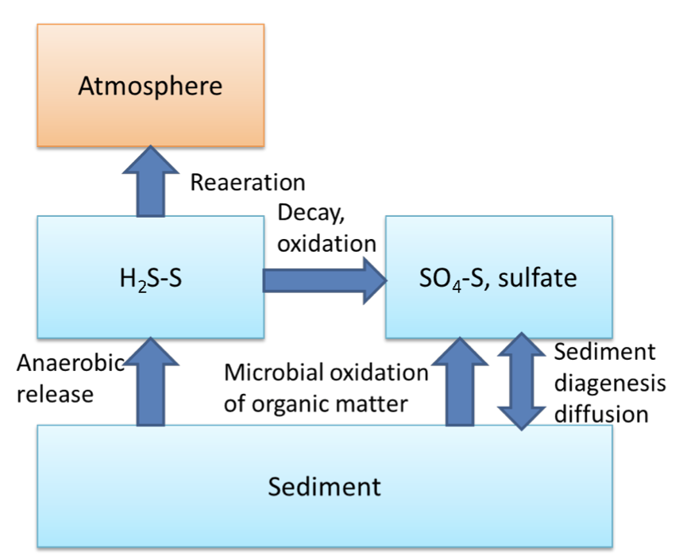
The rate equations for methane and hydrogen sulfide were identical, except for different parameter values and assuming saturation values in the atmosphere of 0 mg/L for both gases:
where:
- \(A_{sed}\) = sediment surface area, m²
- \(A_{sur}\) = surface area of surface computational cell, m²
- \(SOD\) = zero-order sediment oxygen demand, g m⁻² s⁻¹
- \(K_L\) = interfacial exchange rate, m s⁻¹
- \(\gamma_{OM}\) = organic matter temperature rate multiplier
- \(\delta_{SODR}\) = sediment release rate of H₂S or CH₄, fraction of zero-order SOD
- \(\Phi\) = constituent concentration (H₂S or CH₄), g m⁻³
- \(\theta\) = temperature rate multiplier
- \(T\) = temperature, °C
- \(K\) = decay rate, s⁻¹
The oxidation of CH₄ was based on the stoichiometric relationship: CH₄ + 2O₂ → 2H₂O + CO₂
The oxidation of H₂S in the water column was based on: H₂S + 2O₂ → SO₄²⁻ + 2H⁺
The reaeration coefficient for H₂S is: \(k_{H2S} = k_{O2}\left(\frac{MW_{O2}}{MW_{H2S}}\right)^{0.25} = k_{O2} \times 0.984\) (MWH2S = 34.08 g/mol). The reaeration coefficient for CH₄ is: \(k_{CH4} = k_{O2}\left(\frac{MW_{O2}}{MW_{CH4}}\right)^{0.25} = k_{O2} \times 1.188\) (MWCH4 = 16.04 g/mol).
When the sediment diagenesis model is active, the release rates of CH₄ and H₂S are computed directly from this model rather than using the zero-order SOD model.
Water Column Fe²⁺, FeOOH, Mn²⁺, MnO₂¶
The state variables of Fe and Mn in the water column are Fe(II), FeOOH, Mn(II), and MnO₂. These interact with the sediments in the sediment diagenesis model. In the water column the processes active are shown in Figure 72 for Fe and Figure 73 for Mn.
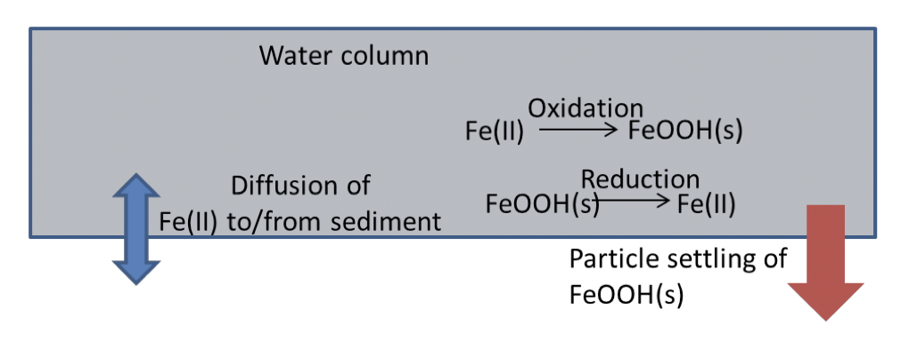
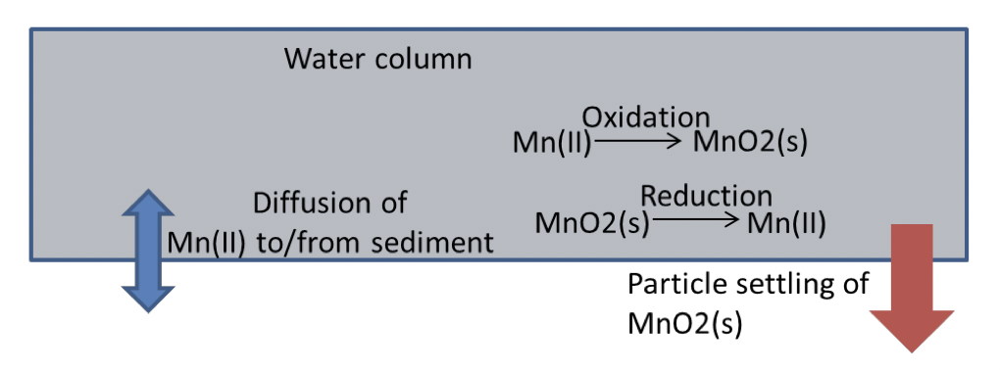
Ferrous Iron Fe²⁺¶
The rate equation in the water column for Fe(II) is:
where:
- \(k_{FeOOH}\) = reduction rate in water column, s⁻¹
- \(k_{Fe(II)0}\) = oxidation rate in water column, s⁻¹ (g m⁻³)⁻¹
- \(K_{FeOOH}\) = half-saturation constant for oxygen for this reaction, g m⁻³
- \(\Phi_{DO}\) = dissolved oxygen concentration, g m⁻³
- \(\Phi_{Fe(II)}\) = ferrous iron concentration, g m⁻³
- \(\Phi_{FeOOH}\) = iron oxyhydroxide concentration, g m⁻³
- \(pH\) = pH in water column
Iron Oxyhydroxide FeOOH¶
The rate equation in the water column for iron oxyhydroxide is:
Mn²⁺ (Divalent Manganese)¶
The rate equation for Mn(II) in the water column is:
where:
- \(k_{MnO_2}\) = reduction rate in water column, s⁻¹
- \(k_{Mn(II)0}\) = oxidation rate in water column, s⁻¹ (g m⁻³)⁻¹
- \(K_{MnO_2}\) = half-saturation constant for oxygen for this reaction, g m⁻³
- \(\Phi_{Mn(II)}\) = Mn(II) concentration, g m⁻³
- \(\Phi_{MnO_2}\) = manganese dioxide concentration, g m⁻³
Manganese Dioxide MnO₂¶
The rate equation in the water column for manganese dioxide is:
Inorganic Suspended Solids¶
Inorganic suspended solids [ISS] are important in water quality simulations because of their influence on density, light penetration, and nutrient availability. Increased solids concentrations reduce light penetration in the water column thus affecting temperature that in turn affects biological and chemical reaction rates. Dissolved phosphorus and silica concentrations can also be affected by solids through sorption and settling. Light and nutrient availability largely control algal production.
The settling velocity of each inorganic suspended solids compartment is a user-defined parameter (Figure 74). Usually this is determined from Stokes' settling velocity for a particular sediment diameter and specific gravity. Any number of inorganic suspended solids groups can be modeled.
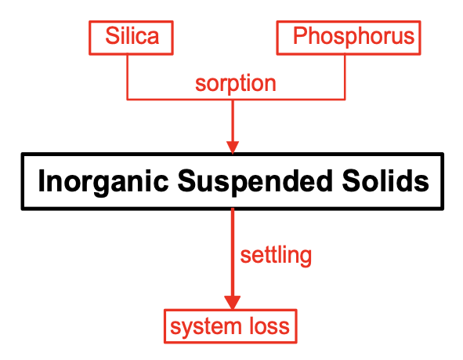
The rate equation for inorganic suspended solids is:
where:
- \(z\) = layer thickness, m
- \(\omega_{ISS}\) = settling velocity, m s⁻¹
- \(\Phi_{ISS}\) = inorganic suspended solids concentration, g m⁻³
In the finite difference representation of suspended solids concentrations, solids settling from layer [K]-1 serve as a source for the layer below it [K]. Typical settling rates can be computed using Stokes' Law. Figure 75 shows typical settling rates based on particle diameter and density.
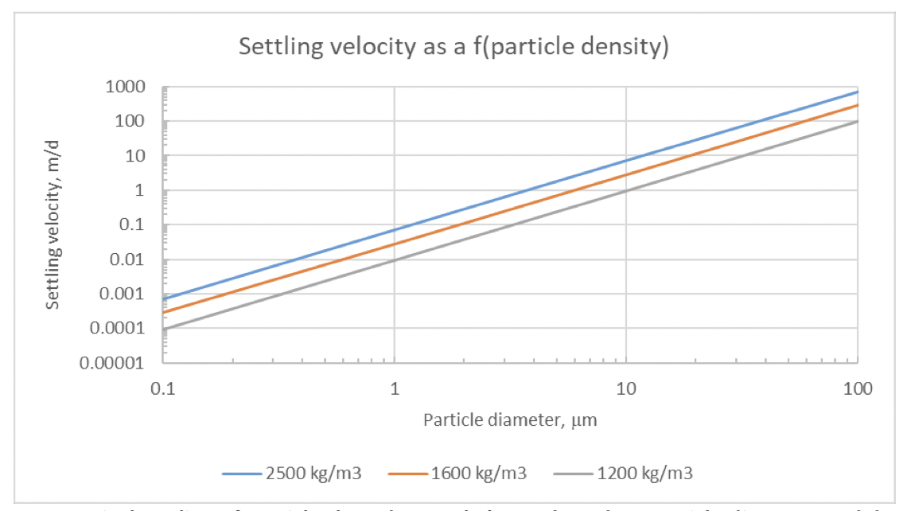
Multiple ISS groups can be defined with different settling velocities and particle sizes. When ISS settles to the bottom, it is lost from the water column. Unlike organic sediments, ISS does not accumulate in the sediment compartment.
Note
In the sediment diagenesis model for Version 4.22 and earlier, there was a group for Mature Fine Tailings that was added as a generic constituent. The current model now sets this state variable as a suspended solids group.
Total Dissolved Solids or Salinity¶
Total dissolved solids (TDS) affect water density and ionic strength, thereby affecting water movements, pH, and the distribution of carbonate species. Dissolved solids are normally expressed as TDS in freshwater applications. Estuarine applications normally use salinity.
Either TDS or salinity can be used with the choice indicated by the parameter [WTYPEC] specified in the control file. If TDS is used, the units are g m⁻³; if salinity is used, the units are kg m⁻³. TDS and salinity are not necessarily equivalent. In the model, both are treated conservatively with the rate term set to zero.
Labile DOM¶
Because of the importance of dissolved oxygen in aquatic systems, all constituents exerting an oxygen demand must be included in kinetic formulations. This demand is often measured as the biochemical oxygen demand (BOD), which includes microbial respiration and metabolism of various organic and inorganic compounds. Dissolved organic matter (DOM) is composed of labile and refractory components (Figure 76). DOM is modeled as two separate compartments because of the different decomposition rates of the two groups.
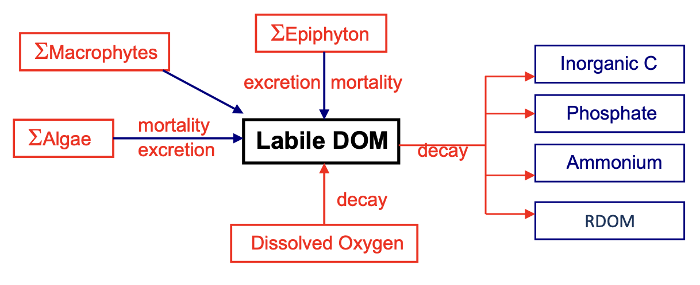
The rate equation for labile DOM is:
where:
- \(P_{am}\) = pattern coefficient for algal mortality
- \(P_{em}\) = pattern coefficient for epiphyton mortality
- \(P_{mm}\) = partitioning coefficient for macrophyte mortality
- \(\gamma_{OM}\) = temperature rate multiplier for organic matter decay
- \(K_{ae}\) = algal excretion rate, s⁻¹
- \(K_{am}\) = algal mortality rate, s⁻¹
- \(K_{ee}\) = epiphyton excretion rate, s⁻¹
- \(K_{em}\) = epiphyton mortality rate, s⁻¹
- \(K_{mm}\) = macrophyte mortality rate, s⁻¹
- \(K_{LDOM}\) = labile DOM decay rate, s⁻¹
- \(K_{L \to R}\) = labile to refractory DOM transfer rate, s⁻¹
- \(\Phi_a\) = algal concentration, g m⁻³
- \(\Phi_e\) = epiphyton concentration, g m⁻³
- \(\Phi_{LDOM}\) = labile DOM concentration, g m⁻³
- \(\Phi_{macro}\) = macrophyte concentration, g m⁻³
Refractory DOM¶
Refractory DOM is composed of compounds in the aquatic environment that slowly decompose, exerting oxygen demand over long periods (Figure 77). Internally, refractory DOM is produced from the decomposition of labile DOM.
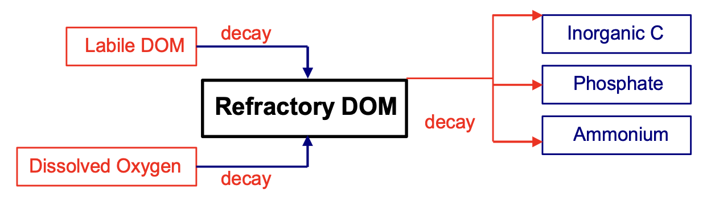
The rate equation for refractory DOM is:
where:
- \(\gamma_{OM}\) = temperature rate multiplier
- \(K_{RDOM}\) = refractory DOM decay rate, s⁻¹
- \(K_{L \to R}\) = transfer rate from labile DOM, s⁻¹
- \(\Phi_{LDOM}\) = labile DOM concentration, g m⁻³
- \(\Phi_{RDOM}\) = refractory DOM concentration, g m⁻³
The rate terms are evaluated in subroutine REFRACTORY_DOM.
Labile POM¶
Labile particulate organic matter (LPOM) represents particulate organic material in the water column. Decaying particulate organic matter is a source of refractory particulate organic matter, nitrogen, phosphorus, and inorganic carbon. A stoichiometric relationship governs mineralization of ammonium, phosphorus, and inorganic carbon, and an oxygen demand is exerted as LPOM decomposes.
When LPOM settles to the bottom, it accumulates and decays in the sediment compartment or the sediment diagenesis compartment if activated for the simulation (Figure 78).
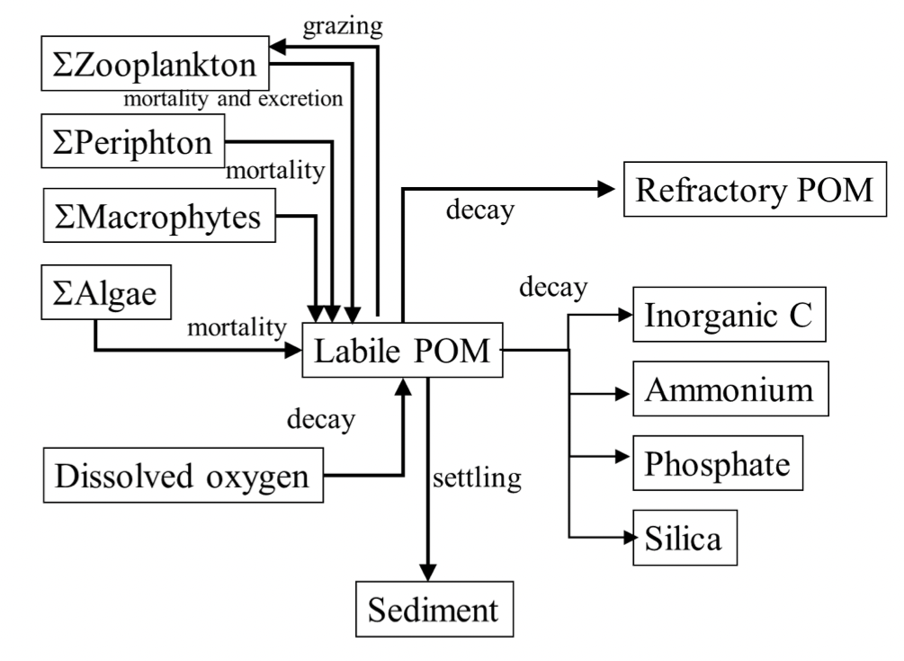
The rate equation for LPOM is:
where:
- \(P_{am}\) = partition coefficient for algal mortality
- \(P_{em}\) = partition coefficient for epiphyton mortality
- \(P_{mm}\) = partition coefficient for macrophyte mortality
- \(P_{zooP}\) = partition coefficient for zooplankton LPOM grazing
- \(\gamma_{OM}\) = temperature rate multiplier for organic matter
- \(\omega_{POM}\) = POM settling rate, m s⁻¹
- \(K_{am}\) = algal mortality rate, s⁻¹
- \(K_{em}\) = epiphyton mortality rate, s⁻¹
- \(K_{mm}\) = macrophyte mortality rate, s⁻¹
- \(K_{zm}\) = zooplankton mortality rate, s⁻¹
- \(K_{zg}\) = zooplankton growth rate, s⁻¹
- \(K_{LPOM}\) = labile POM decay rate, s⁻¹
- \(K_{effic}\) = zooplankton ingestion efficiency
- \(K_{L \to R}\) = transfer rate from labile POM to refractory POM, s⁻¹
- \(\Phi_a\) = algal concentration, g m⁻³
- \(\Phi_e\) = periphyton/epiphyton concentration, g m⁻³
- \(\Phi_{macro}\) = macrophyte concentration, g m⁻³
- \(\Phi_{LPOM}\) = detritus concentration, g m⁻³
- \(\Phi_{zoo}\) = zooplankton concentration, g m⁻³
- \(\sigma_{pom}\) = zooplankton preference fraction for particulate organic matter
- \(\sigma_{alg}\) = zooplankton preference fraction for algae
- \(\sigma_{zoo}\) = zooplankton preference fraction for zooplankton
POM settling and accumulation in the sediment compartment is handled identically to the algal compartment.
Refractory POM¶
Refractory POM is slowly decaying non-living, organic matter that settles (Figure 79). The source/sink terms are first-order decay, the conversion of LPOM to RPOM, and sedimentation. The settled organic matter becomes part of the first-order sediment model or the sediment diagenesis model if they are active.
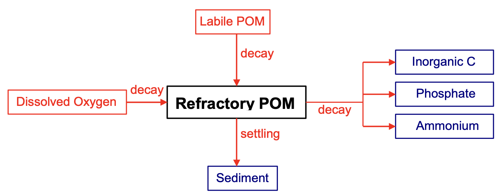
The rate equation for RPOM is:
where:
- \(\gamma_{OM}\) = temperature rate multiplier
- \(K_{L \to R}\) = transfer rate from labile POM to refractory POM, s⁻¹
- \(K_{RPOM}\) = refractory POM decay rate, s⁻¹
- \(\omega_{POM}\) = POM settling velocity, m s⁻¹
- \(\Phi_{LPOM}\) = labile POM concentration, g m⁻³
- \(\Phi_{RPOM}\) = refractory POM concentration, g m⁻³
Organic Matter Variable Stoichiometry¶
CE-QUAL-W2 includes variable stoichiometry of organic matter starting with Version 3.5. Previous versions used fixed stoichiometric constants for the ratios of nitrogen and phosphorus to organic matter.
Eight constituents are required to simulate the amount of nitrogen and phosphorus in labile dissolved organic matter (LDOM), refractory organic matter (RDOM), labile particulate organic matter (LPOM), and refractory particulate organic matter (RPOM). These constituents are summarized in the following table. All inputs of organic matter accumulate N and P according to the stoichiometry of the incoming organic matter.
| Abbreviation | Constituent |
|---|---|
LDOM-P |
Labile dissolved organic matter phosphorus |
RDOM-P |
Refractory dissolved organic matter phosphorus |
LPOM-P |
Labile particulate organic matter phosphorus |
RPOM-P |
Refractory particulate organic matter phosphorus |
LDOM-N |
Labile dissolved organic matter nitrogen |
RDOM-N |
Refractory dissolved organic matter nitrogen |
LPOM-N |
Labile particulate organic matter nitrogen |
RPOM-N |
Refractory particulate organic matter nitrogen |
LDOM-P¶
LDOM-P is the amount of phosphorus in labile dissolved organic matter. The rate equation for LDOM-P is:
RDOM-P¶
The rate equation for RDOM-P is:
LPOM-P¶
The rate equation for LPOM-P is:
RPOM-P¶
The rate equation for RPOM-P is:
LDOM-N¶
LDOM-N is the amount of nitrogen in labile dissolved organic matter. The rate equation for LDOM-N is:
RDOM-N¶
The rate equation for RDOM-N is:
LPOM-N¶
The rate equation for LPOM-N is:
RPOM-N¶
The rate equation for RPOM-N is:
Organic Carbon Constituents¶
The organic matter state variables (LPOM, RPOM, RDOM, LDOM) are based on organic matter dry weight. CE-QUAL-W2 also supports organic matter expressed as carbon (C). Many other models use this approach because organic matter is rarely measured in the field, whereas organic carbon is routinely measured. Instead of LDOM, LPOM, RDOM, and RPOM, the user can specify LDOC, LPOC, RDOC, and RPOC.
Organic matter is difficult for laboratories to measure directly (Figure 80). However, collective water quality parameters such as organic carbon, organic nitrogen, and organic phosphorus are commonly measured. The model includes an option for directly simulating organic carbon constituents without organic matter. The four organic carbon state variables are labile dissolved organic carbon (LDOC), refractory dissolved organic carbon (RDOC), labile particulate organic carbon (LPOC), and refractory particulate organic carbon (RPOC).
LPOC¶
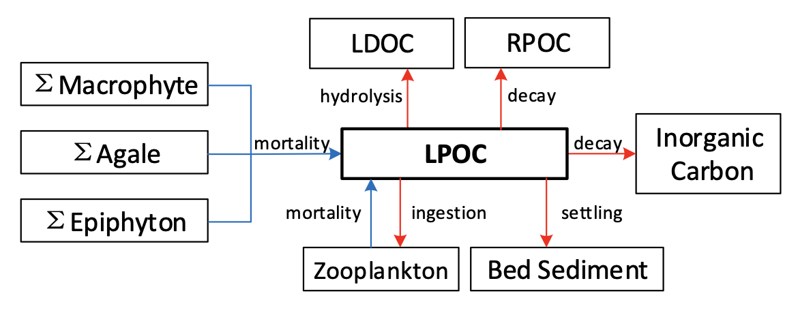
The kinetic source/sink term for LPOC is:
where:
- \(\Phi_{LPOC}\) = LPOC concentration, g C m⁻³
- \(P_{am}\) = fraction of algal mortality into LPOM (0--1)
- \(P_{em}\) = fraction of epiphyton mortality into LPOM (0--1)
- \(P_{mm}\) = fraction of macrophyte mortality into LPOM (0--1)
- \(\delta_{ca}\) = stoichiometric ratio of carbon in algae, g C (g DW)⁻¹
- \(\delta_{ce}\) = stoichiometric ratio of carbon in epiphyton, g C (g DW)⁻¹
- \(\delta_{cm}\) = stoichiometric ratio of carbon in macrophyte, g C (g DW)⁻¹
- \(\delta_{cz}\) = stoichiometric ratio of carbon in zooplankton, g C (g DW)⁻¹
- \(K_{LPOC}\) = LPOC decay rate, s⁻¹
- \(K_{LPOC \to RPOC}\) = transfer rate from LPOC to RPOC, s⁻¹
RPOC¶
The kinetics of RPOC in the water column are shown in Figure 81.
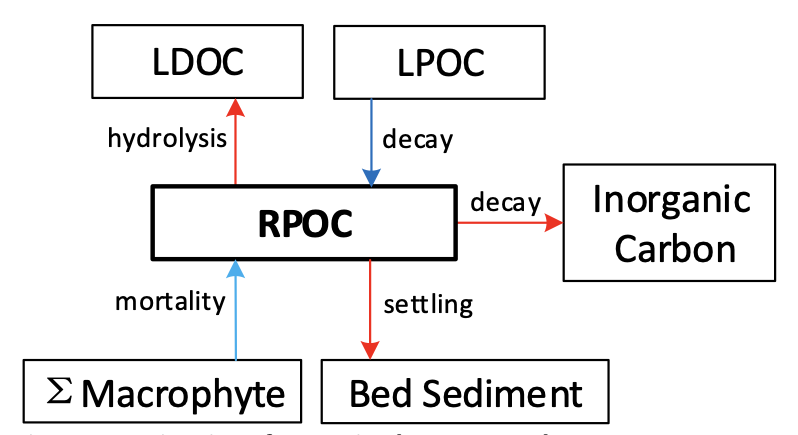
The kinetic source/sink term for RPOC is:
where:
- \(\Phi_{RPOC}\) = RPOC concentration, g C m⁻³
- \(K_{LPOC \to RPOC}\) = transfer rate from LPOC to RPOC, s⁻¹
- \(K_{RPOC}\) = RPOC decay rate, s⁻¹
LDOC¶
The kinetics of LDOC in the water column are shown in Figure 82.
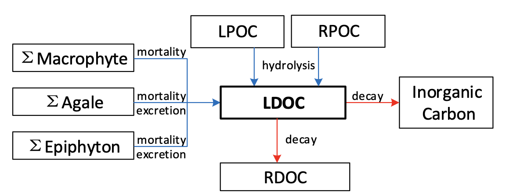
The kinetic source/sink term for LDOC is:
where:
- \(\Phi_{LDOC}\) = LDOC concentration, g C m⁻³
- \(K_{LDOC}\) = LDOC decay rate, s⁻¹
- \(K_{LDOC \to RDOC}\) = LDOC to RDOC transfer rate, s⁻¹
RDOC¶
The kinetics of RDOC in the water column are shown in Figure 83.
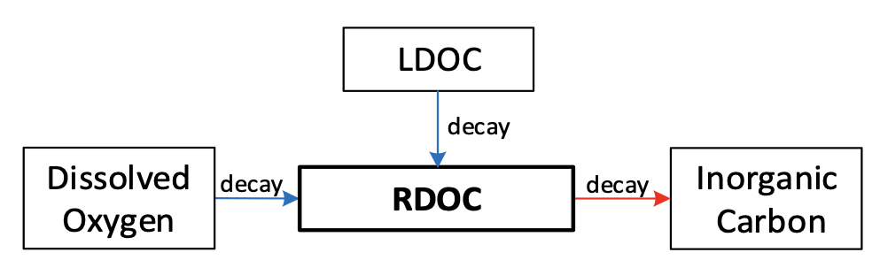
The kinetic source/sink term for RDOC is:
where:
- \(\Phi_{RDOC}\) = RDOC concentration, g C m⁻³
- \(K_{RDOC}\) = RDOC decay rate, s⁻¹
- \(K_{LDOC \to RDOC}\) = LDOC to RDOC transfer rate, s⁻¹
Carbonaceous Biochemical Oxygen Demand (CBOD)¶
Any number of CBOD groups with varying decay rates and either particulate or dissolved can be modeled, allowing the user to more accurately characterize various CBOD sources. Additionally, different CBOD sources can be tracked separately in the model to determine their effect on the receiving water.
When including CBOD in the simulation, ensure that CBOD, DOM, POM, and algal biomass are properly accounted for to avoid double-counting oxygen demand. CBOD is typically specified as allochthonous inputs, while autochthonous organic matter is tracked in the various organic matter compartments. This group can model dissolved or particulate CBOD by specifying a zero or a finite settling velocity, respectively. Settled CBOD enters the first-order sediment compartment.
In Version 3.6 and earlier (Figure 85), the CBOD cycle used fixed stoichiometry in terms of C:N:P. Starting with Version 3.7, the nitrogen and phosphorus corresponding to each CBOD group are modeled as separate constituents.
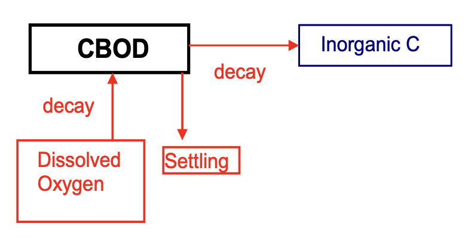
The rate equation for CBOD is:
where:
- \(\Theta\) = BOD temperature rate multiplier
- \(T\) = temperature, °C
- \(\omega_{CBOD}\) = CBOD settling velocity, m s⁻¹
- \(K_{BOD}\) = CBOD decay rate, s⁻¹
- \(R_{BOD}\) = CBOD conversion from input CBOD to CBOD-ultimate (CBODᵤ)
- \(\Phi_{CBOD}\) = CBOD concentration, g m⁻³
Note
The model accepts 5-day CBOD₅ or any other day CBOD as input. The \(R_{BOD}\) term converts to CBODᵤ (ultimate or 28-day) internally. The model outputs CBOD in the same form as the input (e.g., CBOD₅ if CBOD₅ was entered). If CBODᵤ is used as input, set \(R_{BOD}\) = 1.
Typical determination of \(R_{BOD}\) is based on the following standard CBOD equation:
where \(t\) is the time in days (5 days, for example), \(K_{BOD}\) is the BOD decay rate in day⁻¹, and \(CBOD_t\) is the CBOD at that time.
CBODP¶
The phosphorus associated with a specific CBOD group is modeled as a separate constituent. The rate equation for CBODP is:
where:
- \(\Theta\) = BOD temperature rate multiplier
- \(T\) = temperature, °C
- \(\omega_{CBOD}\) = CBOD settling velocity, m s⁻¹
- \(K_{BOD}\) = CBOD decay rate, s⁻¹
- \(\Phi_{CBODP}\) = CBODP concentration, g m⁻³
CBODN¶
The nitrogen associated with a specific CBOD group is modeled as a separate constituent. The rate equation for CBODN is:
where:
- \(\Theta\) = BOD temperature rate multiplier
- \(T\) = temperature, °C
- \(\omega_{CBOD}\) = CBOD settling velocity, m s⁻¹
- \(K_{BOD}\) = CBOD decay rate, s⁻¹
- \(\Phi_{CBODN}\) = CBODN concentration, g m⁻³
Algae¶
An algal community can be represented as a single assemblage or as multiple algae groups (Figure 88). Often, the algal groups might include diatoms, greens, and cyanobacteria. The user has complete freedom in how many and what kinds of algal groups can be included in the simulation through careful specification of the kinetic rate parameters that define the characteristics of each algal group.
Source-Sink Term for Algae¶
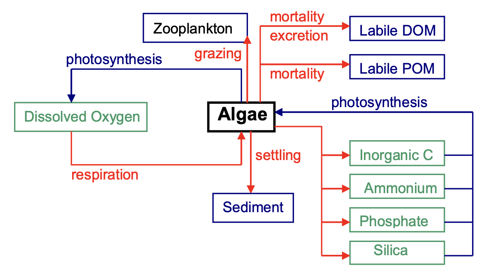
The rate equation for each algal group is:
where:
- \(z\) = cell height
- \(A\) = horizontal area
- \(Z_\mu\) = net growth rate of a zooplankton species
- \(\sigma_{alg}, \sigma_{zoo}\) = zooplankton grazing preference factors for algae (alg) or zooplankton (zoo)
- \(K_{ag}\) = algal growth rate, s⁻¹
- \(K_{ar}\) = algal dark respiration rate, s⁻¹
- \(K_{ae}\) = algal excretion rate, s⁻¹
- \(K_{am}\) = algal mortality rate, s⁻¹
- \(\omega_a\) = algal settling rate, m s⁻¹
- \(\Phi_a\) = algal concentration, g m⁻³
Chlorophyll a (chl a) is the most commonly available estimate of algal biomass. To convert chl a to algal biomass, multiply chl a by the ratio of algae (g m⁻³ dry weight organic matter) to chl a (µg L⁻¹).
Algal Growth Rate¶
Algal growth rate is computed by modifying a maximum growth rate affected by temperature, light, and nutrient availability:
where:
- \(\gamma_{ar}\) = temperature rate multiplier for rising limb of curve
- \(\gamma_{af}\) = temperature rate multiplier for falling limb of curve
- \(\lambda_{\min}\) = multiplier for limiting growth factor (minimum of light, phosphorus, silica, and nitrogen) between 0 and 1
- \(K_{ag}\) = algal growth rate, s⁻¹
- \(K_{ag\max}\) = maximum algal growth rate, s⁻¹
Light Limitation¶
The rate multiplier, \(\lambda_l\), between 0 and 1 for light is based upon the Steele (1962) function:
where:
- \(I\) = available light, W m⁻²
- \(I_s\) = saturating light intensity at maximum photosynthetic rate, W m⁻²
The above expression allows for simulation of photoinhibition at light intensities greater than the saturation value. Light penetration decreases with depth:
where:
- \(I_0\) = solar radiation at the water surface, W m⁻²
- \(\alpha\) = attenuation coefficient, m⁻¹
- \(z\) = depth, m
- \((1-\beta)\) = fraction of solar radiation absorbed at the water surface
The average effect of light on algal growth in a particular model cell can be obtained by combining the above two expressions and integrating over the cell depth to obtain (Chapra and Reckhow, 1983):
where:
and \(d\) is the depth at the top of the model cell, m.
The fraction of solar radiation, \((1-\beta)I_0\), is added directly to the surface layer. The attenuation coefficient, \(\alpha\), consists of a baseline value [EXH2O] to which the effects of inorganic [EXINOR] and organic [EXORG] suspended solids, and algae [EXA] are added.
Nutrient Limitation¶
Rate multipliers limiting maximum algal growth due to nutrient limitations are computed using the Monod relationship:
where:
- \(\Phi_i\) = phosphorus or nitrate + ammonium concentration, g m⁻³
- \(P_i\) = half-saturation coefficient for phosphorus or nitrate + ammonium, g m⁻³
Ammonium Preference¶
The algal nitrogen preference for ammonium is based upon the following (Thomann and Fitzpatrick, 1982) equation:
where:
- \(P_{NH4}\) = ammonium preference factor
- \(K_{NH4}\) = ammonia preference half-saturation coefficient, g m⁻³
- \(\Phi_{NH4}\) = ammonium concentration, g m⁻³
- \(\Phi_{NOx}\) = nitrate-nitrite concentration, g m⁻³
This allows algae to use primarily ammonium and gradually switch to nitrate as ammonium concentrations decrease.
Algal Dark Respiration¶
Algal dark respiration is computed using the rising limb of the temperature function:
where:
- \(\gamma_{ar}\) = temperature rate multiplier for rising limb of curve
- \(\gamma_{af}\) = temperature rate multiplier for falling limb of curve
- \(K_{ar\max}\) = maximum dark respiration rate, s⁻¹
Algal Excretion¶
Algal photorespiration (excretion) is evaluated using an inverse relation to the light rate multiplier:
where:
- \(\gamma_{ar}\) = temperature rate multiplier for rising limb of curve
- \(\gamma_{af}\) = temperature rate multiplier for falling limb of curve
- \(K_{ae\max}\) = maximum excretion rate constant, s⁻¹
- \(\lambda_l\) = light limiting factor
Excretion rates increase at both low and high light intensities, with excretion products contributing to labile DOM.
Algal Mortality¶
Algal mortality is defined as:
where:
- \(\gamma_{ar}\) = temperature rate multiplier for rising limb of curve
- \(\gamma_{af}\) = temperature rate multiplier for falling limb of curve
- \(K_{am\max}\) = maximum mortality rate, s⁻¹
This mortality rate represents both natural and predator mortality. Algal growth does not occur in the absence of light. Algal growth is not allowed to exceed the limit imposed by nutrient supply over a given timestep. Algal excretion is not allowed to exceed algal growth rates.
Like inorganic solids, settling algae serve as a source for the layer below. Unlike inorganic solids, algae passing to the sediments accumulate within the sediment compartment. POM is also accumulated in this sediment compartment.
Algae Vertical Migration¶
Some species of cyanobacteria, often responsible for harmful algal blooms (HABs), can move vertically in the water column through their own motility, independent of water velocity. This vertical migration can lead to HABs when colonies accumulate at the water surface and experience increased growth, degrading water quality and environmental health.
Cyanobacteria vertical migration is achieved through a process called buoyancy regulation. Cells regulate their buoyancy either with carbohydrate ballast or gas vesicles. Two different models were used to calculate a settling velocity for an algae group at each time step.
Predefined Velocity¶
A simple way to model the vertical movement of cyanobacteria is to assume a velocity function for colonies based on knowledge of their typical movement. An equation for colony velocity as a function of time can be used:
where \(A\) is the migration amplitude and the period is assumed to be one day (86,400 seconds). The value of the phase (\(\phi\)) depends on the initial location of colonies.
The velocity function can also be dependent on space as well as time:
where \(\alpha\) is the light attenuation coefficient and \(I_0\) is solar irradiance at the water surface, \(H\) is a user-supplied depth parameter. The exponential term is only applied during the photoperiod.
Dynamic Velocity¶
The predefined velocity approach can predict cyanobacteria movement based on the observed tendency of colonies to migrate vertically on a daily cycle; however, it does not reflect the response of colonies to variations in solar irradiance. The dynamic velocity model uses colony density computed based on solar irradiance:
where \(c_1\) and \(c_2\) are calibration coefficients. In the absence of light, density decreases at a constant rate. The numerical solution is:
The function of light, \(F(I)\), must account for variations in light intensity over the depth of a model grid cell due to light attenuation with depth. The integral of light over the grid cell is (Chapra, 2008):
where:
where \(\beta\) is the fraction of solar irradiance absorbed at the water surface and \(\alpha\) is the light attenuation coefficient (TVA, 1972). The height of the model grid cell is given by \(\Delta z\), \(I_0\) is irradiance at the water surface, and \(I_s\) is the saturating light intensity for the cyanobacteria species.
The settling velocity is then solved via Stokes' law:
where \(g\) is acceleration due to gravity, \(r\) is colony radius, \(\rho_c\) is cyanobacteria density, \(\rho'\) is density of water, \(\phi\) is form resistance, and \(n\) is viscosity of water.
An exponentially-decaying weighted average of past growth rates in each grid cell was applied:
where:
and \(k\) is the time decay constant for influence of past densities. This is similar to the approach taken by Serizawa et al. (2008).
In the dynamic velocity model, colonies were assumed to have a minimum and maximum allowable density (\(\rho_{min}\) and \(\rho_{max}\), respectively) as well as a constant radius based on values found in field studies (Table 13). When predicted densities were greater than the maximum or less than the minimum allowed values, the value was set to \(\rho_{max}\) or \(\rho_{min}\), respectively. It was also necessary to define initial densities (\(\rho_0\)) for all colonies within a grid cell. Initial colony density, \(\rho_{0_i}\), was assumed to vary exponentially from the surface to the bed, following a similar pattern to light decay with depth, as:
where \(\rho_{0_S}\) is the initial colony density at the surface and \(\rho_{0_B}\) is the initial colony density at the bed.
Table 13. Literature values for biological parameters of cyanobacteria used in models.
| Study | Identifier | Minimum density, kg m⁻³ | Maximum density, kg m⁻³ | Colony radius, µm | Saturating light intensity, W m⁻² |
|---|---|---|---|---|---|
| Reynolds (1984) | Cyanobacteria | - | - | 25--1000 | - |
| Reynolds et al. (1987) | M. aeruginosa | 985 | 1005 | 120--3200 | - |
| Reynolds et al. (1987) | A. flos-aqua | 920 | 1030 | 28--100 | - |
| Reynolds et al. (1987) | P. agardhii | 985 | 1085 | 13.7--18.3 | - |
| Nakamura et al. (1993) | Microcystis sp. | - | - | 10--300 | - |
| Visser et al. (1997) | Microcystis sp. | - | - | - | 139 |
| Long et al. (2001) | M. aeruginosa | - | - | - | - |
| Wu and Song (2008) | M. aeruginosa | - | - | - | 119--244 |
| Wu et al. (2009) | M. aeruginosa | - | - | - | 65--119 |
| Zhang et al. (2011) | M. aeruginosa | - | - | - | 75--392 |
| Zhu et al. (2014, 2018) | Microcystis sp. | 967 | 997 | 10--350 | - |
| Rowe et al. (2016) | Microcystis sp. | - | - | 12.5--370, median: 58.5 | - |
Algae Toxin Production¶
Cyanobacteria are known to produce toxins that can affect water quality in a surface waterbody. Not all genera or species produce toxins. The model considers both intracellular and extracellular toxins. The four main toxins modeled are microcystin (MC), cylindrospermopsin (CYN), anatoxin-a (ATX), and saxitoxin (STX).
| Microcystin (MC) | Cylindrospermopsin (CYN) | Anatoxin-a (ATX) | Saxitoxin (STX) | |
|---|---|---|---|---|
| Type | Hepatotoxin (liver) | Cytotoxin (several organs) | Neurotoxin (nervous system) | Neurotoxin (nervous system) |
| Toxin Presence | Mostly exist as intracellular toxins | Mostly exist as extracellular toxins (dissolved) | Highly water-soluble; extracellular mainly through cell lysis | Paralytic shellfish toxins (accumulate in shellfish) |
| Degradation | Photodegradation (< 2 weeks); Biodegradation by bacteria | Photodegradation (half-life of 20 days); UV (half-life of 18 hours) | Biodegradation by bacteria (half-life of 5 days) | Natural waters (half-life of 9-28 days) |
Typical health guidelines for these toxins are shown in the following table.
Table 15. Oregon Health Authority Advisory Toxin Levels (Oregon Health Authority, 2020a, 2020b).
| MC | CYN | ATX-a | STX | Units | Notes | |
|---|---|---|---|---|---|---|
| OHA Recreational Use Values | 4 | 8 | 8 | 4 | µg L⁻¹ | Everyone |
| OHA Drinking Water Guidance Values | 1.6 | 3 | 3 | 1.6 | µg L⁻¹ | Adults |
| OHA Drinking Water Guidance Values | 0.3 | 0.7 | 0.7 | 0.3 | µg L⁻¹ | Ages 5 years and younger |
Notes:
- Units for STX are in saxitoxin equivalents: µg STX-eq L⁻¹.
- Advisory levels were provided for all four toxins in 2018, but only MC and CYN in drinking water are regulated under current rules.
The intracellular and extracellular toxin equations used in CE-QUAL-W2 are:
where:
- \(C_{intra}\) = intracellular toxin concentration
- \(C_{extra}\) = extracellular toxin concentration
- \(CTP\) = fraction of algae concentration producing toxin
- \(\beta\) = ratio of intracellular toxin to dry weight biomass
- \(k_{release}\) = toxin release rate
- \(k_{decay}\) = extracellular decay rate
The intracellular toxin is calculated based only on the concentration of algae present in a model cell and the fraction of algae producing that toxin. The intracellular concentration is summed for all the algal groups that produce that toxin. There are no decay or other rates associated with the intracellular toxin concentration. The extracellular rate equation is only a function of the death rate of algae, the release rate of intracellular toxin, and the extracellular decay. Only one value is allowed for the release rate and decay rate for each toxin being modeled.
Each of the four toxins (microcystin, cylindrospermopsin, anatoxin-a, and saxitoxin) have been added as state variables to the CE-QUAL-W2 code with the option to turn any of them "on" or "off" depending on the cyanobacteria species that grow in the waterbody of interest.
Table 16. Model parameter ranges for the CE-QUAL-W2 toxin model.
| Parameter | MC | CYN | ATX-A | STX |
|---|---|---|---|---|
CTP, fraction of algae concentration producing toxin |
Waterbody dependent, determined by species present | |||
CTB, ratio of intracellular toxin to dry weight biomass (mg-toxin mg-DW⁻¹) |
0.0005--0.024 | 0.0005--0.007 | 0.001--0.01 | 0.001--0.004 |
CTR, release rate, day⁻¹ |
Approx. 0--1 times excretion rate | Approx. 1--2 times excretion rate | Approx. 0--1 times excretion rate | Approx. 0--1 times excretion rate |
CTD, extracellular decay rate, day⁻¹ |
0.05--0.2 | 0.01--0.06 | 0.05--0.2 | 0.01--0.07 |
Periphyton/Epiphyton¶
Any number of user-defined periphyton/epiphyton groups can be modeled (Figure 90). Similar to the first-order sediment compartment, periphyton/epiphyton are not transported in the water column.
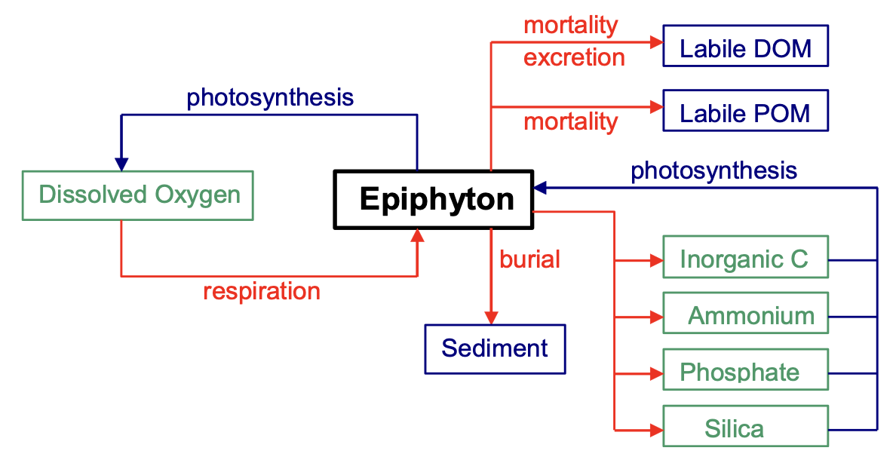
The rate equation for each epiphyton/periphyton group is:
where:
- \(K_{eg}\) = epiphyton growth rate, s⁻¹
- \(K_{er}\) = epiphyton dark respiration rate, s⁻¹
- \(K_{ee}\) = epiphyton excretion rate, s⁻¹
- \(K_{em}\) = epiphyton mortality rate, s⁻¹
- \(K_{eb}\) = epiphyton burial rate, s⁻¹
- \(\Phi_e\) = epiphyton concentration, g m⁻³
Epiphyton Growth Rate¶
Epiphyton/periphyton growth rate is computed by modifying a maximum growth rate affected by epiphyton/periphyton biomass, temperature, and nutrient availability:
where:
- \(\gamma_{er}\) = temperature rate multiplier for rising limb of curve
- \(\gamma_{ef}\) = temperature rate multiplier for falling limb of curve
- \(\lambda_{\min}\) = multiplier for limiting growth factor (minimum of phosphorus, silica, nitrogen, and epiphyton/periphyton biomass) between 0 and 1
- \(K_{eg\max}\) = maximum epiphyton/periphyton growth rate, s⁻¹
The rate multiplier for light is based upon the Steele (1962) function:
Light penetration decreases with depth:
The average effect of light on epiphyton/periphyton growth in a model cell is:
The attenuation coefficient, \(\alpha\), is computed from a baseline value [EXH2O] to which the effects of inorganic [EXINOR] and organic [EXORG] suspended solids, as well as the extinction of each algal group, are added. Epiphyton/periphyton self-shading is accounted for in the biomass limitation formulation.
Nutrient limitation uses the Monod relationship:
The epiphyton/periphyton preference for ammonium is modeled using (Thomann and Fitzpatrick, 1982):
Epiphyton Respiration, Excretion, Mortality¶
Epiphyton/periphyton dark respiration:
Epiphyton/periphyton excretion:
Epiphyton/periphyton mortality:
Epiphyton/periphyton that die (mortality) become a part of the labile particulate organic matter and the labile dissolved organic matter pool. The user defines the fraction of the dead epiphyton (EPOM) that goes to the LPOM pool. The epiphyton/periphyton burial rate represents the burial of dead epiphyton/periphyton to the organic sediment compartment and becomes part of the first-order sediment compartment.
Biomass Limitation¶
The epiphyton/periphyton biomass is controlled by a biomass limitation equation based on Monod kinetics. The biomass limitation function, \(f\) [BLIM], varies from 0 to 1 and is multiplied with the growth rate:
where:
- \(B\) = epiphyton areal biomass, g m⁻² [EPD]
- \(K_B\) = epiphyton areal biomass half-saturation coefficient, g m⁻² [EHS]
The areal biomass is calculated as:
where:
- \(A\) = computational cell surface area including side walls and bottom area, m²
- \(V\) = computational cell volume, m³
- \(\Phi_e\) = epiphyton concentration, g m⁻³
The biomass limitation is a surrogate calibration parameter for light limitation due to self-shading.
Macrophytes¶
The macrophyte model consists of two parts: a section describing the water quality compartment and a section describing the hydrodynamic compartment. Both sections are from Berger (2000) and Berger and Wells (2008).
The macrophyte model simulates multiple submerged macrophyte species without differentiating between plant parts (Figure 92). Light, temperature, carbon dioxide, ammonia-nitrogen (the sole nitrogen source for macrophytes), and ortho-phosphorus may limit growth. Depending on the macrophyte species, nitrogen and phosphorus may be obtained from the sediments or the water column. Plants grow upward from the sediment through model layers. Macrophyte shading is modeled by making light attenuation a function of macrophyte concentration.
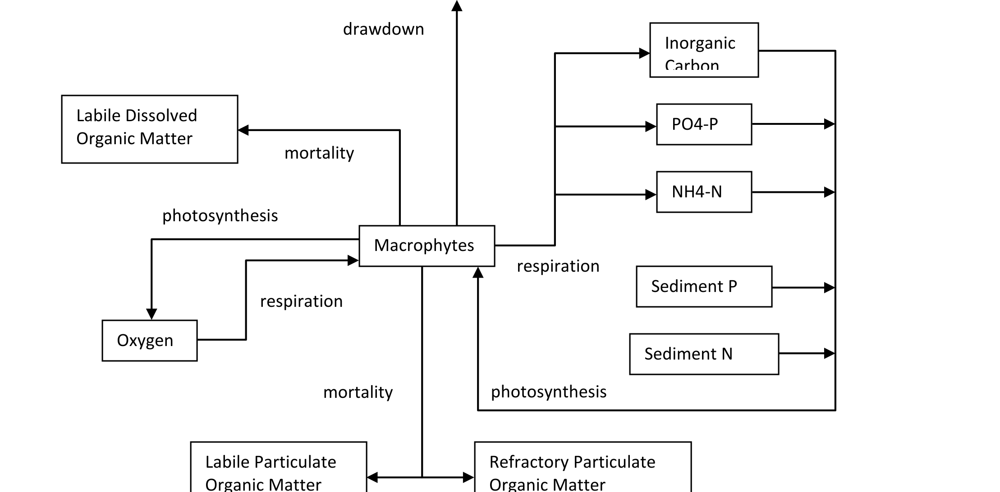
The macrophyte growth rate is modeled as:
where:
- \(S_{macro}\) = macrophyte growth rate density, g m⁻³ s⁻¹
- \(I\) = solar radiation, W m⁻²
- \(f(I,N,P,C)\) = growth limiting function between 0 and 1
- \(\mu_{m\max}\) = maximum macrophyte growth rate (input: d⁻¹; internal: s⁻¹)
- \(K_{mr}\) = maximum respiration rate (input: d⁻¹; internal: s⁻¹)
- \(K_{mm}\) = mortality/excretion rate (input: d⁻¹; internal: s⁻¹)
- \(\gamma_1\) = ascending temperature rate multiplier
- \(\gamma_2\) = descending temperature rate multiplier
- \(\Phi_{macro}\) = macrophyte concentration, g m⁻³
Growth rate, respiration rate, and mortality/excretion rate are temperature dependent. Temperature effects are modeled using the equations developed by Thornton and Lessem (1978), also used in the phytoplankton compartment of CE-QUAL-W2. The growth limiting function \(f(I,N,P,C)\) is the minimum of the light \(f(I)\), nitrogen \(f(N)\), phosphorus \(f(P)\), and carbon \(f(C)\) limiting functions:
All the limiting functions are unitless and have a value between 0 and 1. The limiting functions for the nutrients have the Michaelis-Menten form:
where \(S\) is the nutrient concentration (g m⁻³) and \(K_S\) is the half-saturation concentration (g m⁻³).
Light limitation is modeled with a hyperbolic equation:
where \(I\) is solar radiation (W m⁻²) and \(I_h\) is the half-saturation coefficient for solar radiation (W m⁻²). This function is frequently used in the absence of photoinhibition.
The net light extinction coefficient (m⁻¹) is modeled as a function of macrophyte plant tissue concentration:
where:
- \(\varepsilon_{H_2O}\) = light extinction exclusive of suspended solids, m⁻¹ [EXH2O]
- \(\varepsilon_{iss}\) = light extinction due to inorganic suspended solids, m² g⁻¹ [EXINOR]
- \(\varepsilon_{oss}\) = light extinction due to non-living organic suspended solids, m² g⁻¹ [EXORG]
- \(\varepsilon_{mac}\) = light extinction due to macrophytes, m² g⁻¹ [EXM]
- \(\varepsilon_{algae}\) = light extinction due to algae, m² g⁻¹ [EXA]
Modeling Frictional Force¶
Modeling of flow through macrophytes incorporates the following concepts:
- Porosity of the macrophytes was calculated through determination of the blockage area of the vegetation normal to the direction of flow
- The drag of individual stems and leaves were totaled to determine the total drag force in a model cell
- The effective Manning's \(n\) was calculated by combining the effect of bed shear and the drag force on the plants
The total frictional force \(f\) was partitioned into a bottom friction component \(f_b\) and a vegetation drag component \(f_v\):
Bottom shear \(\tau_b\) was simulated using Manning's friction factor:
The effective Manning's \(n\) of each model cell was calculated in the manner used by Petryk and Bosmajian (1975):
where \(n_b\) is the Manning's friction factor due to bed shear only.
Modeling Porosity¶
The volume \(V_m\) of macrophytes can be estimated by dividing the macrophyte mass in a model cell \(m\) by density \(\rho_m\):
The porosity \(\varphi\) was estimated by dividing volume within a cell free of macrophytes by the cell total volume \(V\):
Changes to Governing Equations¶
Several of the governing equations have been altered to account for porosity and the frictional effects of macrophytes. The new x-momentum equation is:
where \(U\) is x-direction velocity (m/sec), \(W\) is z-direction velocity (m/sec), \(B\) is channel width (m), \(\rho\) is density (kg m⁻³), \(P\) is pressure (N m⁻²), \(\tau_{xz}\) is vertical shear stress (N m⁻²), \(\tau_{xx}\) is longitudinal shear stress (N m⁻²), and \(\varphi\) is porosity.
Vertical shear stress \(\tau_{xz}\) is a function of interfacial shear stress, shear stress due to wind, and bottom and plant shear stress. It was determined from:
where \(\tau_{bm}\) is bottom and plant shear stress, \(A_z\) is turbulent eddy viscosity, \(\tau_{wx}\) is wind shear stress, and \(k\) is wave number.
Bottom and plant shear stress is calculated using the effective Manning's \(n\) determined above:
The continuity equation was changed to:
The new free water surface equation is:
The constituent transport equation was modified to:
Macrophyte Model Parameters¶
| Variable | CE-QUAL-W2 Value | Coefficient definition (units) |
|---|---|---|
PRNMC |
ON or OFF | Macrophyte snapshot output on or off |
MACROC |
ON or OFF | Macrophyte compartment on or off |
EXM |
0.01 | Light extinction coefficient for organic particles, m (g m⁻³)⁻¹ |
MBMP |
40.0 | Threshold macrophyte concentration for growth transfer to above layer, g m⁻³ |
MMAX |
500.0 | Maximum macrophyte concentration, g m⁻³ |
MG |
0.30 | Maximum macrophyte growth rate, day⁻¹ |
MR |
0.05 | Macrophyte respiration rate, day⁻¹ |
MM |
0.05 | Macrophyte mortality rate, day⁻¹ |
SATM |
20.0 | Macrophyte half-saturation light intensity at maximum photosynthetic rate, W m⁻² |
MT1 |
7 | Lower temperature bound for macrophyte growth, °C |
MT2 |
15 | Lowest temperature at which macrophyte growth processes are near maximum rate, °C |
MT3 |
24 | Upper temperature at which macrophyte growth processes are near maximum rate, °C |
MT4 |
34 | Upper lethal temperature for macrophytes, °C |
MK1 |
0.1 | Temperature rate multiplier for MT1 |
MK2 |
0.99 | Temperature rate multiplier for MT2 |
MK3 |
0.99 | Temperature rate multiplier for MT3 |
MK4 |
0.01 | Temperature rate multiplier for MT4 |
MPOM |
0.9 | Fraction of dead macrophytes that becomes POM; the fraction (1 - MPOM) becomes labile DOM |
LRPMAC |
0.2 | Fraction of POM originating as dead macrophytes that becomes labile POM |
PSED |
0.5 | Fraction of phosphorus uptake by macrophytes obtained from sediments |
NSED |
0.5 | Fraction of nitrogen uptake by macrophytes obtained from sediments |
MHSP |
0 | Half-saturation constant for P uptake by macrophytes, g m⁻³ |
MHSN |
0 | Half-saturation constant for N uptake by macrophytes, g m⁻³ |
MHSC |
10 | Half-saturation constant for carbon uptake by macrophytes, g m⁻³ |
MACP |
0.005 | Stoichiometric equivalent between macrophyte biomass and orthophosphate |
MACN |
0.08 | Stoichiometric equivalent between macrophyte biomass and nitrogen |
MACC |
0.45 | Stoichiometric equivalent between macrophyte biomass and carbon |
O2MR |
1.1 | Dissolved oxygen requirement for macrophyte respiration |
O2MG |
2.0 | Stoichiometric equivalent for dissolved oxygen production during macrophyte photosynthesis |
CD |
3.0 | Macrophyte drag coefficient |
Zooplankton¶
The zooplankton compartment (Figure 93) was adapted from the U.S. Army Corps of Engineers (USACE) reservoir model CE-QUAL-R1 (Environmental Laboratory, 1995). Zooplankton are assumed to be non-motile and are transported only by advection and dispersion. Zooplankton can graze algae, detritus (POM), and other zooplankton. Losses occur through mortality and respiration. Algae vertical settling or floating can also be specified through a settling velocity and dynamic vertical migration.
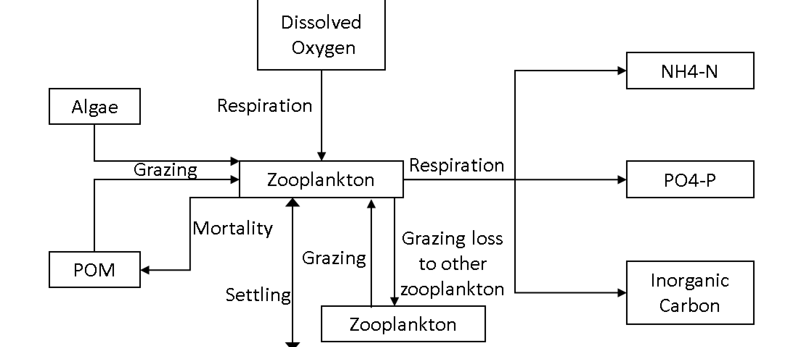
The source/sink term for zooplankton is:
where:
- \(\Phi_{lpom}\) = labile particulate organic matter concentration, g m⁻³
- \(\Phi_a\) = algae concentration, g m⁻³
- \(\Phi_{zoo}\) = zooplankton concentration, g m⁻³
- \(K_{zm}\) = zooplankton mortality rate (input: d⁻¹; internal: s⁻¹)
- \(K_{z\max}\) = maximum ingestion rate for zooplankton (input: d⁻¹; internal: s⁻¹)
- \(K_{zr}\) = zooplankton respiration rate (input: d⁻¹; internal: s⁻¹)
- \(Z_{1/2}\) = half-saturation coefficient for zooplankton ingestion, g m⁻³
- \(Z_e\) = zooplankton ingestion efficiency
- \(Z_L\) = low threshold concentration for zooplankton feeding, g m⁻³
- \(\gamma_1\) = temperature coefficient for rising limb of curve for zooplankton
- \(\gamma_2\) = temperature coefficient for falling limb of curve for zooplankton
- \(\sigma_{alg}\) = zooplankton preference fraction for algae
- \(\sigma_{zoo}\) = zooplankton preference fraction for zooplankton
- \(\sigma_{pom}\) = zooplankton preference fraction for particulate organic matter
- \(\omega_{zoo}\) = zooplankton settling velocity
The growth rate is a function of temperature, the maximum growth rate, and a modified Michaelis-Menten equation that includes a low threshold concentration below which zooplankton do not feed. At dissolved oxygen concentrations below 2 g m⁻³, feeding stops and the mortality rate is doubled.
| Name | Description |
|---|---|
ZMAX |
Maximum ingestion rate for zooplankton (input: day⁻¹; internal: s⁻¹) |
ZMORT |
Maximum nonpredatory mortality rate for zooplankton (input: day⁻¹; internal: s⁻¹) |
ZEFFIC |
Zooplankton assimilation efficiency, proportion of food assimilated to food consumed (dimensionless) |
PREFA |
Preference factor of zooplankton for algae (dimensionless) |
PREFP |
Preference factor of zooplankton for detritus (dimensionless) |
ZRESP |
Maximum zooplankton respiration rate (input: day⁻¹; internal: s⁻¹) |
ZOOMIN |
Threshold food concentration at which zooplankton feeding begins, g m⁻³ |
ZS2P |
Zooplankton half-saturation constant for food concentration, g m⁻³ |
ZS |
Zooplankton settling velocity, m day⁻¹ |
ZOOT1 |
Lower temperature for zooplankton growth, °C |
ZOOT2 |
Lower temperature for maximum zooplankton growth, °C |
ZOOT3 |
Upper temperature for maximum zooplankton growth, °C |
ZOOT4 |
Upper temperature for zooplankton growth, °C |
ZOOK1 |
Fraction of zooplankton growth rate at ZOOT1 (dimensionless) |
ZOOK2 |
Fraction of zooplankton growth rate at ZOOT2 (dimensionless) |
ZOOK3 |
Fraction of zooplankton growth rate at ZOOT3 (dimensionless) |
ZOOK4 |
Fraction of zooplankton growth rate at ZOOT4 (dimensionless) |
EXZ |
Zooplankton light extinction, m⁻¹ |
O2ZR |
Oxygen stoichiometry for zooplankton respiration |
ZP |
Stoichiometric equivalent between zooplankton biomass and phosphorus |
ZN |
Stoichiometric equivalent between zooplankton biomass and nitrogen |
ZC |
Stoichiometric equivalent between zooplankton biomass and carbon |
Phosphorus¶
Phosphorus is an important element in aquatic ecosystems since it serves as one of the primary nutrients for phytoplankton growth. In many fresh waters, phosphorus is considered to be the nutrient limiting maximum production of phytoplankton biomass.
Phosphorus (Figure 94) is assumed to be completely available as ortho-phosphate (PO₄) for uptake by phytoplankton. Measurements of soluble reactive phosphorus are closest to the form used in the model. Macrophytes are specified as either taking P from the sediments or from the water column.
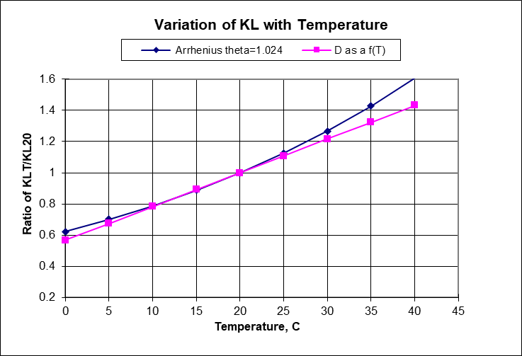
The rate equation for phosphorus is:
where:
- \(\Delta z\) = model cell thickness, m
- \(A_{sed}\) = sediment surface area, m²
- \(V\) = cell volume, m³
- \(P_P\) = adsorption coefficient, m³ g⁻¹
- \(f_{psed}\) = fraction of macrophyte phosphorus uptake from sediments
- \(\delta_{Pe}\) = periphyton/epiphyton stoichiometric coefficient for phosphorus
- \(\delta_{Pa}\) = algal stoichiometric coefficient for phosphorus
- \(\delta_{Pm}\) = macrophyte stoichiometric coefficient for phosphorus
- \(\delta_{Pz}\) = zooplankton stoichiometric coefficient for phosphorus
- \(\delta_{POM}\) = organic matter stoichiometric coefficient for phosphorus
- \(\delta_{P-CBOD}\) = phosphorus/CBOD stoichiometric ratio
- \(SOD\) = sediment oxygen demand, g m⁻² s⁻¹
- \(K_s\) = sediment decay rate, s⁻¹
- \(\Phi_P\) = phosphorus concentration, g m⁻³
Dissolved inorganic phosphorus adsorbs onto inorganic particulates under oxic conditions and is lost when these materials settle. A Langmuir isotherm describes this process. Since phosphorus concentrations are generally small, only the isotherm's linear region is utilized and is represented by the product \(P_P \Phi_P\). Adsorption is not allowed to occur if dissolved oxygen concentrations approach anaerobic conditions.
Warning
Phosphorus adsorption onto inorganic suspended solids should be used cautiously. In most systems, available phosphorus sites for adsorption onto inflowing inorganic suspended solids are generally already in use.
Sediment contribution of phosphorus to overlying waters can be simulated in three ways:
- The sediment compartment accumulates particulate organic matter and algae, which then decay under oxic conditions. This is modeled as a first-order process.
- Under anaerobic conditions using the zero-order sediment oxygen model, sediments can be assigned a release rate for phosphorus that is a function of the assigned sediment oxygen demand rate.
- Sediment diagenesis predicts P release under anaerobic conditions. This is a truly predictive model based on organic matter and Fe-adsorbed P loading to the sediments.
Ammonium¶
Ammonium is a product of the decay of organic matter (Figure 95), and algae can use ammonium during photosynthesis to form proteins. In many estuarine applications, nitrogen is the limiting nutrient for algal growth. Macrophytes can prefer taking N from the sediments versus the water column. Ammonia can decay in the presence of nitrifying bacteria to nitrite and nitrate. Ammonium is viewed as total ammonia, both ammonium (NH₄⁺-N) and unionized ammonia (NH₃-N).
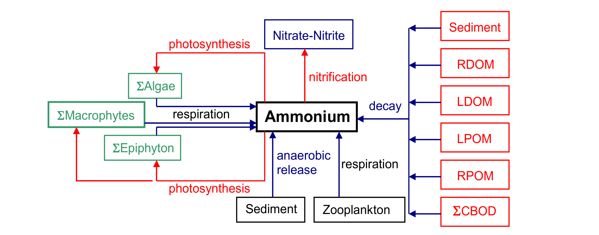
The rate equation for ammonium is:
The rate terms are evaluated in subroutine AMMONIUM. As with phosphorus, zero-order sediment release only occurs when dissolved oxygen is less than a minimum value as determined by the transition from aerobic to anaerobic processes. Either a zero-order or first-order process or a combination of both may be used for sediment ammonium release. The sediment diagenesis model also computes ammonium release during anaerobic conditions. In the model, the ammonium concentration is in units of NH₄ as N.
Unionized ammonia is also a derived constituent in CE-QUAL-W2 and is derived from temperature, NH₄-Total, and pH.
Nitrate-Nitrite¶
This compartment represents nitrate plus nitrite. Nitrite is an intermediate product in nitrification between ammonium and nitrate. Nitrate can be used as a source of nitrogen for algae and periphyton/epiphyton during photosynthesis based on the ammonia-nitrate preference factor set for each algal and periphyton group.
Nitrogen may be the limiting nutrient for algae in systems with high phosphorus loadings or in estuaries (Figure 96). Some species of cyanobacteria can fix atmospheric nitrogen for use in photosynthesis. This process can be included by setting the nitrogen half-saturation concentration for algal growth to zero.
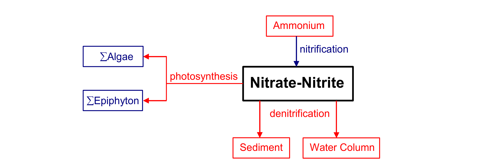
The rate equation for nitrate-nitrite is:
where:
- \(\gamma_{NH4}\) = temperature rate multiplier for nitrification
- \(\gamma_{NOx}\) = temperature rate multiplier for denitrification
- \(\delta_{Ne}\) = epiphyton stoichiometric coefficient for nitrogen
- \(\delta_{Na}\) = algal stoichiometric coefficient for nitrogen
- \(P_{NH4}\) = ammonium preference factor
- \(K_{NH4}\) = nitrification rate, s⁻¹
- \(K_{NOx}\) = denitrification rate, s⁻¹
- \(K_{ag}\) = algal growth rate, s⁻¹
- \(\omega_{NOx}\) = sediment transfer velocity, m s⁻¹
- \(\Phi_{NH4}\) = ammonia-nitrogen concentration, g m⁻³
- \(\Phi_{NOx}\) = nitrate-nitrogen concentration, g m⁻³
Nitrification is only allowed to occur if oxygen is present and is gradually decreased as oxygen is depleted. Denitrification is allowed to occur as oxygen is depleted based on the transition from aerobic to anaerobic processes (following a Monod approach). In the model, the nitrate+nitrite concentration is in units of NO₃ + NO₂ as N.
Dissolved Silica¶
Dissolved silica is an important component of diatoms, providing the structural skeleton (Figure 97). In many cases diatoms can be silica limited. Dissolved silica is taken up by algae based on stoichiometric relationships and is produced by the decay of organic matter containing particulate biogenic silica. Dissolved silica is also adsorbed onto inorganic suspended solids based on a partitioning coefficient.
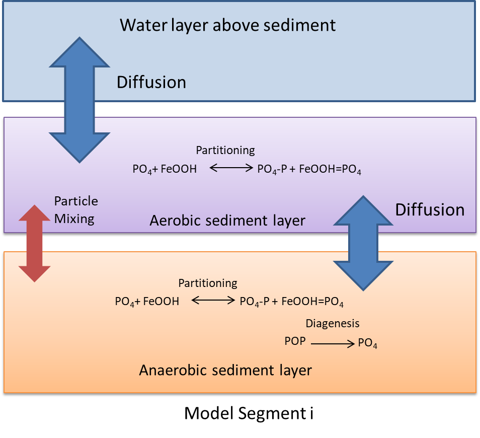
The rate equation for dissolved silica is:
Particulate Biogenic Silica¶
Particulate biogenic silica results from diatom mortality and settles and also dissolves to form dissolved silica (Figure 98).
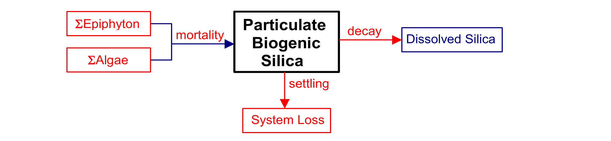
The rate equation for particulate biogenic silica is:
where:
- \(P_{am}\) = partition coefficient for algal mortality
- \(\delta_{Sie}\) = epiphyton stoichiometric coefficient for silica
- \(\delta_{Sia}\) = algal stoichiometric coefficient for silica
- \(\gamma_{OM}\) = temperature rate multiplier for organic matter
- \(K_{PSi}\) = particulate biogenic silica decay rate, s⁻¹
- \(\omega_{PSi}\) = particulate biogenic silica settling rate, m s⁻¹
Dissolved Oxygen¶
Oxygen is one of the most important elements in aquatic ecosystems. It is essential for higher forms of life, controls many chemical reactions through oxidation, and is a surrogate variable indicating the general health of aquatic systems.
CE-QUAL-W2 includes both aerobic and anaerobic processes (Figure 99). The ability to model anaerobic periods is important since it provides information on potential problems with water quality. Simulations can be used to identify possibilities for both metalimnetic and hypolimnetic oxygen depletion and its impact on various water control management alternatives.
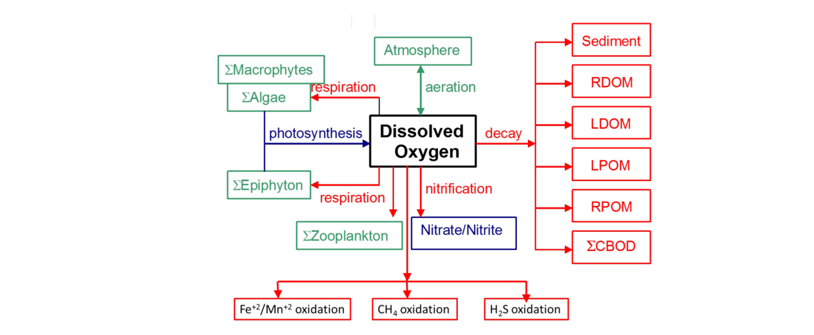
The rate equation for dissolved oxygen is:
The rate terms are evaluated in subroutine DISSOLVED_OXYGEN. Decay is not allowed to occur when dissolved oxygen concentrations are zero. A Monod formulation is used to move gradually from oxic to anoxic conditions:
where \(\Phi_{DO}\) is the concentration of dissolved oxygen and \(K_{DO}\) is a half-saturation dissolved oxygen concentration when oxic reactions are half of their maximum without limitation of oxygen conditions.
River Reaeration Equations¶
Since reaeration in waterbodies is dependent on surface layer turbulence, the reaeration formulae for riverine, lake/reservoir, and estuarine systems are different. Surface layer turbulence for riverine waterbodies is dependent on boundary shear, while for lake or reservoir waterbodies, wind stress is usually the primary component of surface layer turbulence.
| Type of water body | \(k_a\) (day⁻¹) at 20 °C |
|---|---|
| Small ponds and backwaters | 0.10--0.23 day⁻¹ |
| Sluggish streams and large lakes | 0.23--0.35 day⁻¹ |
| Large streams of low velocity | 0.35--0.46 day⁻¹ |
| Large streams of normal velocity | 0.46--0.69 day⁻¹ |
| Swift streams | 0.69--1.15 day⁻¹ |
| Rapids and waterfalls | >1.15 day⁻¹ |
| Tidal river-estuary: Mean tidal depth < 3 m, average tidal velocity of 0.3 m/s | 1.2 m/day |
| Tidal river-estuary: Mean tidal depth < 3 m, average tidal velocity of 1 m/s | 2.1 m/day |
| Tidal river-estuary: Mean tidal depth 3-6 m, average tidal velocity of 0.3 m/s | 0.9 m/day |
| Tidal river-estuary: Mean tidal depth 3-6 m, average tidal velocity of 1 m/s | 1.8 m/day |
| Tidal river-estuary: Mean tidal depth 6-9 m, average tidal velocity of 0.3 m/s | 0.7 m/day |
| Tidal river-estuary: Mean tidal depth 6-9 m, average tidal velocity of 1 m/s | 1.5 m/day |
| Tidal river-estuary: Mean tidal depth > 9 m, average tidal velocity of 0.3 m/s | 0.6 m/day |
| Tidal river-estuary: Mean tidal depth > 9 m, average tidal velocity of 1 m/s | 1.2 m/day |
Note that for rivers the value for \(k_a\) was in day⁻¹, but for estuaries \(K_L\) was reported in units of m/day. To convert between \(k_a\) in day⁻¹ and \(K_L\) in m/day, the following is used:
where \(A\) is the surface area and \(V\) is the volume of the surface layer. The difference in units has to do with the river correlation using the average depth (\(V/A\)) in its correlation. In lakes and reservoirs (and sometimes in estuaries), the transfer coefficient used is not a function of the average depth and is presented in units of L/T.
The model provides multiple formulations for river reaeration. Most of these equations are based on field studies of selected streams or laboratory channels.
Table 20. River reaeration equations.
| # | Equation | Comments | Applicability | Reference |
|---|---|---|---|---|
| 0 | Either Eq 1, 2, or 4 | \(K_a\) evaluated based on applicability criteria of these equations | Covar (1976) | |
| 1 | \(K_a = \frac{K_L}{H} = \frac{(D_{O2}U)^{1/2}}{H^{3/2}}\) | \(D_{O2}\) = H₂O molecular diffusion, m² s⁻¹; U = average velocity, m s⁻¹; H = average channel depth, m; \(K_a\), day⁻¹ | depths between 1-30 ft and velocities between 0.5-1.6 fps | O'Connor and Dobbins (1958) |
| 2 | \(K_a = \frac{K_L}{H} = \frac{11.6U}{H^{1.67}}\) | U, ft s⁻¹; H, ft; \(K_a\), day⁻¹ | depths between 2-11 ft and velocities between 1.8-5 fps | Churchill, Elmore, and Buckingham (1962) |
| 3 | \(K_a = 0.88US\) for \(10 < Q < 300\) cfs; \(K_a = 1.8US\) for \(1 < Q < 10\) cfs | S, ft mile⁻¹; U, ft s⁻¹; \(K_a\), day⁻¹ | suggested for use when Q < 10 cfs | Tsivoglou and Wallace (1972) |
| 4 | \(K_a = \frac{K_L}{H} = \frac{21.6U^{0.67}}{H^{1.85}}\) | U, ft s⁻¹; H, ft; \(K_a\), day⁻¹ | depths between 0.4-2.4 ft and velocities between 0.1-1.8 fps | Owens et al. (1964) |
| 5 | \(K_a = \frac{K_L}{H} = \frac{25u^*}{H}(1+F^{0.5})\) | \(u^*\) = shear velocity, \((HSg)^{0.5}\); S = slope of energy grade line; F = Froude number, \(U/(gH)^{0.5}\); \(K_a\), day⁻¹ | Thackston and Krenkel (1966) | |
| 6 | \(K_a = \frac{K_L}{H} = \frac{7.62U}{H^{1.33}}\) | U, ft s⁻¹; H, ft; \(K_a\), day⁻¹ | Langbien and Durum (1967) | |
| 7 | \(K_a = 517(US)^{0.524}Q^{-0.242}\) for \(Q < 0.556\); \(K_a = 596(US)^{0.528}Q^{-0.136}\) for \(Q > 0.556\) | U, m s⁻¹; S, m m⁻¹; Q, m³ s⁻¹; \(K_a\), day⁻¹ | for pool and riffle streams | Melching and Flores (1999) |
| 8 | \(K_a = 88(US)^{0.313}D^{-0.353}\) for \(Q < 0.556\); \(K_a = 142(US)^{0.333}D^{-0.66}W^{-0.243}\) for \(Q > 0.556\) | U, m s⁻¹; S, m m⁻¹; W = stream top width, m; D = average depth, m; \(K_a\), day⁻¹ | for channel-control streams | Melching and Flores (1999) |
| 9 | with channel slope: \(K_a = C_1 U^{C_2} H^{C_3} S^{C_4}\); w/o channel slope: \(K_a = C_1 U^{C_2} H^{C_3}\) | U, m s⁻¹; H, m; S, non-dimensional; \(K_a\), day⁻¹; \(C_1, C_2, C_3, C_4\) = user-defined parameters | User-defined relationship | |
| 10 | \(K_a = \frac{K_L}{H} = \frac{5.0u^*}{H}(1+9F^{0.25})\) | \(u^*\) = shear velocity, \((HSg)^{0.5}\); S = slope of energy grade line; F = Froude number, \(U/(gH)^{0.5}\); \(K_a\), day⁻¹ | Thackston and Dawson (2001) |
Mills et al. (1985) in a review of water quality reaeration coefficients used a different formulation than equation 3 based on a 1978 reference at 25 °C:
where \(S\) is the slope in ft/ft and \(U\) is velocity in ft/s. Figure 100 compares the reaeration coefficient formulations as a function of flow rate.
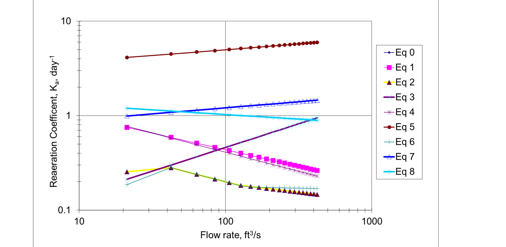
Lake Reaeration Equations¶
Wind effects rather than boundary shear more often control reaeration in lakes, reservoirs, and estuarine systems. The model provides numerous formulations as a function of wind speed at 10 m, including Broecker et al. (1978), Gelda et al. (1996), Banks and Herrera (1977), Wanninkhof et al. (1991), Cole and Buchak (1995), Banks (1975), Smith (1978), Liss (1973), Downing and Truesdale (1955), Kanwisher (1963), Yu et al. (1977), Weiler (1974), and a user-defined relationship.
The wind speed at 10 m elevation in the middle of a lake or reservoir, \(W_{10m}\), can be computed from that measured at 10 m on land by using an approach from Fang and Stefan (1994):
where:
- \(z_{o1}\) = roughness of land (assume 0.01 m)
- \(z_{o2}\) = roughness of water surface (assume 0.0001 m)
- \(\delta\) = thickness of wind boundary layer over smooth surface, m
- \(ZB = 0.8 \ln\frac{fetch}{2} - 1.0718\)
The function \(f(fetch)\) varies from 1.056 for small lakes to 1.123 for large lakes. Figures 101 through 104 illustrate the variation of wind speed and \(K_L\) and the associated correction factors. The fetch is the length in m of the wind over the water surface from one bank to the other.
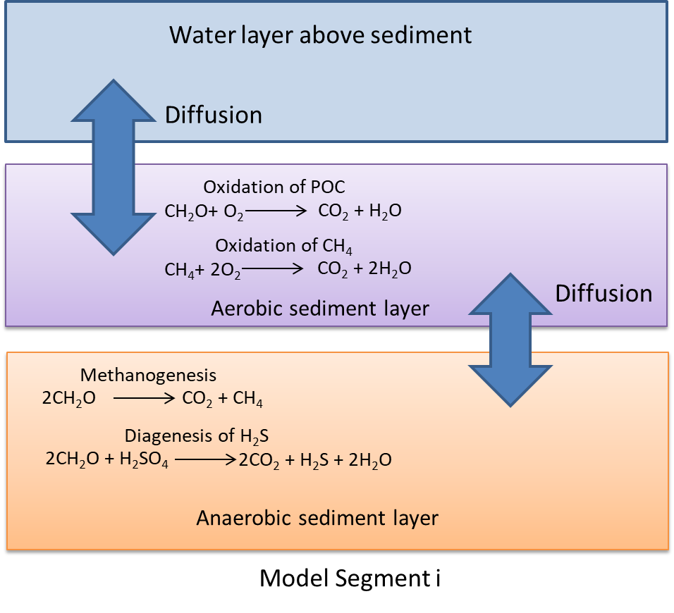
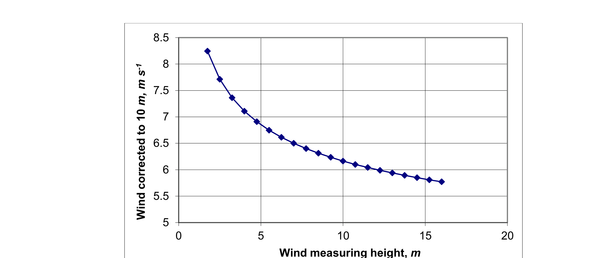
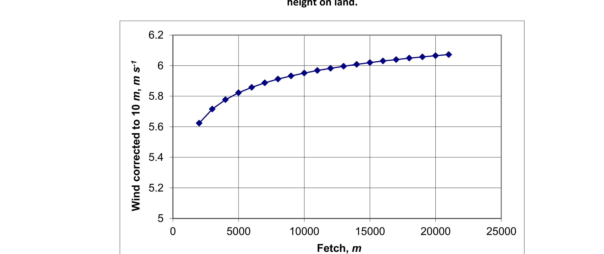
Estuarine Equations¶
For estuarine systems, Thomann and Mueller (1987) and Chapra (1997) suggest using any of the wind formulations or Equation 1 in the river reaeration table using the mean tidal velocity over a tidal cycle for the horizontal velocity.
Table 22. Reaeration equations for estuarine waterbody at 20 °C.
| # | Equation | Comments | Reference |
|---|---|---|---|
| 0 | Either Eq 1, 2, or 4 from Table 20 | \(K_a\) is determined based on applicability criteria of each of these 3 formulations | Covar (1976) |
| 1 | \(K_a = \frac{K_L}{H} = \frac{0.728W^{0.5} - 0.317W + 0.0372W^2}{H} + 3.93\frac{\sqrt{U}}{H^{0.5}}\) | U, m s⁻¹; this formula combines the effect of wind from Banks and Herrera (1977) and estuary tidal flow | Thomann and Fitzpatrick (1982) |
| 2 | \(K_a = C_1 U^{C_2} H^{C_3} + \frac{0.5 + C_4 W^2}{H}\) | U, m s⁻¹; H, m; W, m s⁻¹ at 10 m; \(K_a\), day⁻¹; \(C_1, C_2, C_3\), and \(C_4\) = user-defined parameters | User-defined relationship |
For cases where the time scale of tidal flow is much greater than the time scale for reaeration, the reaeration process can be described as a steady process and the impacts of stream flow and wind can be additive (Chu and Jirka, 2003):
where \(K_{Lb}\) is the reaeration coefficient (or transfer velocity) due to bottom shear and \(K_{Lw}\) is the reaeration coefficient due to wind in m/day.
where \(h\) is the depth in cm, \(u_{*b} = \sqrt{\frac{f}{8}}U\), \(U\) is the mean water velocity, and \(f\) is approximately 0.04.
\(K_{Lw} = \alpha u_{*a}\) for smooth surfaces (\(u_{*a}\) < 20 cm/s), where \(\alpha = 4.38 \times 10^{-5}\) when \(u_{*a}\) is in units of cm/s.
\(K_{Lw} = \beta u_{*a}^2\) for rough surfaces, where \(\beta = 1.83E - 3\) when \(u_{*a}\) is in units of cm/s.
\(u_{*a} = 0.01U_{10}(8 + 0.65U_{10})^{1/2}\) from Wu (1980) and \(U_{10}\) is wind speed at 10 m in m/s and \(u_{*a}\) is in m/s.
Reaeration Temperature Dependence¶
Reaeration temperature dependence is usually based upon an Arrhenius formulation:
where \(\Theta\) is 1.024. The molecular diffusivity of oxygen varies according to temperature:
where \(D_{O2}\) is molecular diffusivity of oxygen (m² s⁻¹) and \(T\) is temperature (°C).
No temperature correction was made to the calculated value of \(K_L\) in earlier versions of the model (Figure 105). The latest version includes the correction with theta set to 1.024.
Dam Reaeration¶
Many rivers and reservoirs have spillways or weirs over which water entrains oxygen into a pool below the dam. This section outlines the approach for including oxygen and nitrogen entrainment at dams and weirs.
Small Dams or Weirs¶
Many rivers have small spillways or weirs over which water flows that entrains oxygen. The following table lists formulae for predicting the entrainment of dissolved oxygen based on empirical data.
Table 23. Formulae for small dam or weir reaeration effects.
| Equation | Comments | Reference |
|---|---|---|
| \(\frac{D_a}{D_b} = 1 + 0.11ab(1 + 0.046T)H\); or \(D_a - D_b = \left[1 - \frac{1}{1 + 0.11ab(1 + 0.0467)H}\right]D_a\) | \(D_a\) = DO deficit above dam, g m⁻³; \(D_b\) = DO deficit below dam, g m⁻³; \(T\) = temperature, °C; \(H\) = height of water fall, ft; \(a\) = 1.25 in clear to slightly polluted water to 1.00 in polluted water; \(b\) = 1.00 for weir with free flow; \(b\) = 1.3 for step weirs or cascades | Barrett et al. (1960) |
| \(D_a - D_b = 0.037HD_a\) | Only valid for dams less than 15 ft and T between 20 and 25 °C | Mastropietro (1968) |
| \(\frac{D_a}{D_b} = 1 + 0.38ab(1 - 0.11c)(1 + 0.046T)c\) | \(H\) = height of water fall, m; \(a\) = 1.8 for clean water to 0.65 for gross polluted water; \(b\) = 0.05 for sluice gates; 1.0 for sharp crested straight-faced weir; 0.45 for flat broad crested curved face weir; 0.7 for flat, broad crested weir with regular step; 0.8 for sharp crested vertical face weir; 0.6 for flat broad crested weir vertical face | Butts and Evans (1983) |
Most of these equations have been used for dams or weirs with heights of fall between 3 and 10 m. These equations do not generally predict supersaturation.
Large Dam Spillways/Gates¶
The USACE has conducted gas abatement studies on the Columbia and Snake River system for many years. Empirical models for gas production from spillways were developed in CRiSP 1.6. The gas production equations are empirical correlations between TDG, measured approximately one mile downstream of the dam, and discharge.
| Equation type | Equation | Description |
|---|---|---|
| Linear function of total spill | \(\%TDG = mQ_s + b\) | \(Q_s\) = total spill, kcfs; \(m\) = empirical coefficient; \(b\) = empirical coefficient |
| Bounded exponential of total spill | \(\%TDG = a + be^{cQ_s}\) | \(a, b, c\) = empirical coefficients |
| Bounded exponential per spillway | \(\%TDG = a + be^{cq_s}\) | \(q_s\) = spill through individual spillway, kcfs |
Table 25. Equations used in CRiSP model for gas production for Columbia and Snake Dams.
| Dam | Equation | Coefficients |
|---|---|---|
| Bonneville | \(\%TDG = mQ_s + b\) | \(m\) = 0.12, \(b\) = 105.61 |
| Lower Granite | \(\%TDG = a + be^{cQ_s}\) | \(a\) = 138.0; \(b\) = -35.8; \(c\) = -0.10 |
| Dworshak | \(\%TDG = a + be^{cQ_s}\) | \(a\) = 135.9; \(b\) = -71.1; \(c\) = -0.4787 |
| Ice Harbor | \(\%TDG = a + be^{cQ_s}\) | \(a\) = 136.8; \(b\) = -42.0; \(c\) = -0.0340 (1995); \(a\) = 138.7; \(b\) = -79.0; \(c\) = -0.0591 (1996); \(a\) = 130.9; \(b\) = -26.5; \(c\) = -0.0220 (1997); \(a\) = 120.9; \(b\) = -20.5; \(c\) = -0.0230 (1998) |
| Hell's Canyon | \(\%TDG = a + be^{cQ_s}\) | \(a\) = 138; \(b\) = -36; \(c\) = -0.02 [Assumed relationship] |
DO Impacts of Spillways/Weirs or Gates¶
For each spillway, weir, or gate, the user has the choice of equation to use for computing the effects of hydraulic structures on downstream dissolved oxygen. The equations chosen are shown in the following table.
Table 26. Spillways/weirs and gate reaeration.
| # | Equation type | Equation | Description of empirical coefficients |
|---|---|---|---|
| 1 | Linear function of spill on a per spillway basis | \(\%TDG = aq_s + b\); DO concentration \(\Phi_{O2} = \%TDG \cdot \Phi_s\) | \(\%TDG\) = % total dissolved gas saturation; \(q_s\) = spill through an individual spillway, kcfs; \(a\) = empirical coefficient; \(\Phi_s\) = dissolved oxygen saturation |
| 2 | Empirical coefficients \(a\) and \(b\) | \(\%TDG = a + be^{aq_s}\); \(\Phi_{O2} = \%TDG \cdot \Phi_{sat}\) | \(q_s\) = spill through an individual spillway, kcfs; \(a, b, c\) = empirical coefficients; \(\Phi_{sat}\) = dissolved oxygen saturation |
| 3 | Reaeration effect for a small height weir or dam (< 10 m) | \(\frac{D_a}{D_b} = 1 + 0.38ab(1 - 0.11c)(1 + 0.046T)c\); \(\Phi_{O2} = \Phi_{sat} - D_b\) | \(D_a\) = DO deficit above dam, g m⁻³; \(D_b\) = DO deficit below dam, g m⁻³; \(T\) = temperature, °C; \(H\) = height of water fall, m; \(a\) = 1.8 for clean water to 0.65 for gross polluted water; \(b\) = 0.05 for sluice gates to 1.0 for sharp crested straight-faced weir; \(\Phi_{sat}\) = dissolved oxygen saturation, g m⁻³ |
| 4 | Reaeration is increased by a fraction of the input dissolved oxygen | \(C_{O2} = FRAC \cdot C_{into\ turbine\ O2}\) | \(FRAC\) = fraction of incoming dissolved oxygen; \(a\) = FRAC (if static); \(b\) = 0 no input file, \(a\) = FRAC applied at all times; \(b\) = 1 input time series file for FRAC values; \(c\) = 0 (no limit on saturation); \(c\) = 1 (saturation limited to 100%) |
Note
For equations 1 and 2, the maximum TDG allowed is 145%. If TDG is computed to be less than 100%, there is no effect of the spillway or gate on reaeration. For each spillway or gate defined in the model, there is a section to define whether gas effects for nitrogen and dissolved oxygen are computed and, if so, by which formula.
SYSTDG Algorithm¶
The SYSTDG algorithm for computing total dissolved gas (TDG) from spillways was developed by Schneider and Hamilton (2015a, 2015b) to compute real-time TDG saturation levels in the Columbia River basin, USA. SYSTDG is an empirical regression equation for each spillway at a hydropower facility based on flow rate, tailwater depth, and barometric pressure. Zhang and Threadgill (2019) integrated this algorithm into CE-QUAL-W2 for the Columbia and Snake River hydropower facilities.
The SYSTDG TDG regression equations are:
| No | TDG Production Equation |
|---|---|
| 1 | \(TDG_{sp} = P1 \cdot (1 - e^{P3 \cdot Q_{sp}}) + bp\) |
| 2 | \(\Delta TGP_{sp} = P1 \cdot (1 - e^{P3 \cdot Q_{sp}})\); \(TDG_{sp} = P1 \cdot (twe - twce)^{P2} \cdot (1 - e^{P3 \cdot q_s}) + P4 + bp\) |
| 3 | \(TDG_{sp} = P1 \cdot (twe - twce)^{P2} \cdot q_s^{P3} + P4 + bp\) |
| 4 | \(TDG_{sp} = P1 \cdot (twe - twce) + P2 \cdot q_s^{P3} + P4 + bp\) |
| 5 | \(TDG_{sp} = P1 \cdot (1 - e^{P2 \cdot q_s}) + P3 \cdot (Temp_{tw} - P4) + bp\) |
where \(TDG_{sp}\) is the spillway discharge total gas pressure (mmHg), \(\Delta TGP_{sp}\) is the spillway discharge gas pressure (mmHg), \(bp\) is the observed barometric pressure (mmHg), \(twe\) is the observed project tailwater elevation (feet), \(twce\) is the project-specific tailwater channel elevation (feet), \(Temp_{tw}\) is the tailwater temperature (°C), \(Q_{sp}\) is the total project spillway discharge (kcfs), \(q_s\) is the flow-weighted specific spillbay discharge (kcfs), \(P1\)-\(P4\) are project-specific coefficients (unitless) determined from nonlinear regression analyses.
Schneider and Hamilton (2015b) provided coefficient values for 11 federal dams on the Columbia and Snake River system as shown in the following table.
Table 28. Coefficients for Spillway TDG Production in SYSTDG from Schneider and Hamilton (2015b).
| Dam | E1 | E2 | P1 | P2 | P3 | P4 | TWCE | SPAT |
|---|---|---|---|---|---|---|---|---|
| Dworshak Dam (DWR) (# of bays known) | 0.0 | 0.0 | 410.00 | 0.0 | -0.210 | -26.70 | 0.0 | - |
| Dworshak Dam (DWR) (default) | 0.0 | 0.0 | 288.20 | 0.0 | -0.510 | 0.0 | 0.0 | - |
| Dworshak Dam (DWR) (RO) | 0.0 | 0.0 | 240.00 | 0.0 | -0.32 | 0.0 | 0.0 | - |
| Lower Granite Dam (LWG) | 1.000 | 0.0 | 5.300 | 1.000 | -0.123 | 0.0 | 585.0 | 8 |
| Little Goose Dam (LGS) | 1.200 | 0.0 | 5.566 | 1.000 | -0.080 | 0.0 | 480.0 | 6 |
| Lower Monumental Dam (LMN) | 0.800 | 0.0 | 1.000 | 1.100 | 0.500 | 0.0 | 405.0* | 8 |
| Ice Harbor Dam (IHR) | 1.000 | 0.0 | 0.156 | 1.345 | 0.7956 | 60.970 | 320.0 | 8 |
| McNary Dam (MCN) | 0.650 | 0.0 | 5.620 | 1.000 | -0.119 | 0.0 | 228.0 | 21 |
| John Day Dam (JDA) | 0.150 | 0.0 | 1.000 | 1.000 | 0.671 | 23.500 | 135.0 | 20 |
| Dalles Dam (TDA) | 0.0 | 0.0 | 4.870 | 1.000 | 0.0 | -207.51 | 0.0* | 22 |
| Bonneville Dam (BON) | 0.0 | 0.0 | 1.560 | 13.660 | 1.000 | 23.030 | 0.0 | 20 |
| Chief Joseph Dam (CHJ) | 0.0 | 0.0 | 1.000 | 1.160 | 0.260 | 0.000 | 743.0 | 19 |
| Grand Coulee Dam (GCL) (fbe < 1266) | 1.380 | 22.600 | 0.0 | 0.0 | 0.0 | 312.00 | 0.0 | 0 |
| Grand Coulee Dam (GCL) (fbe > = 1266) | 0.0 | 0.0 | 400.00 | 0.0 | -0.020 | 0.0 | 0.0 | 0 |
| Grand Coulee Dam (GCL) (fbe > = 1266) | 1.0 | 0.0 | 316.96 | -0.098 | 1.085 | 11.4 | 0.0 | 0 |
The unit spillway discharge was a surrogate measure for the velocity, momentum, and exposure time of aerated flow associated with spillway discharge.
The flow weighted specific spillbay discharge can be actual measured discharges through each spillbay or computed as a function of the spill pattern:
where \(Q_i\) = discharge through spillbay \(i\), \(nb\) = the number of project spillbays, \(C\) = project and spill pattern specific constant.
The interaction of powerhouse flows and the highly aerated spillway flows can be considerable at many dams. The powerhouse discharge can be entrained with the spillway discharge, becoming "gassed" to the same level as the spillway. In SYSTDG, the entrainment of powerhouse flows is computed as a simple linear function of spillway flows.
Table 30. List of powerhouse flow entrainment equations in SYSTDG (Scheider and Hamilton, 2015a).
| Equation # | Powerhouse Flow Entrainment Equation |
|---|---|
| 1 | \(Q_{ent} = E1 \cdot Q_{sp} + E2\) |
| 2 | \(Q_{ent} = \min[(Q_{tot}/60), 1] \cdot E1 \cdot Q_{sp} + E2\) |
| 3 | \(Q_{ent} = \min[(Q_{sp}/20), 1] \cdot E1 \cdot Q_{sp} + E2\) |
where \(Q_{ent}\) = total powerhouse flow that is entrained in spillway flow (kcfs), \(Q_{tot}\) = total project discharge (powerhouse and spillway) (kcfs), \(E1\)-\(E2\) = project-specific coefficients (unitless).
\(Q_{ent}\) calculated from the above equations must be less than or equal to the total powerhouse discharge:
In SYSTDG, the average tailrace mixing TDG pressures generated from a project are computed from the flow-weighted average TDG pressures of the spillway and the powerhouse:
where \(TDG_{rel}\) = project release TGP after mixing (mmHg), \(TDG_{sp}\) = spillway TGP (mmHg), \(TDG_{ph}\) = release TGP through the powerhouse turbines (mmHg), \(Q_{sp}\) = total project spill (kcfs), \(Q_{ph}\) = total flow through powerhouse turbines (kcfs).
Dissolved Oxygen Saturation Computations¶
The dissolved oxygen saturation is computed from Mortimer's (1981) formulation:
where:
- \(T\) = water temperature, °C
- \(P_{alt}\) = altitude correction factor = \(\left(1-\frac{H}{44.3}\right)^{5.25}\)
- \(H\) = elevation of the waterbody, km above sea level
The saturation value is also a function of the chlorinity in saline environments. The following equation is used to compute DO saturation for a saltwater waterbody type that includes salinity effects:
where:
- \(S\) = salinity, kg m⁻³
- \(T\) = temperature, K
Sediments¶
Organic sediment contributions to nutrients and dissolved oxygen demand are simulated using three methods.
Zero-Order Model¶
The zero-order process (Figure 106) uses a specified sediment oxygen demand (SOD) and anoxic release rates for phosphorus, ammonium, inorganic carbon, and iron that are temperature dependent. Nutrient releases do not occur when dissolved oxygen concentrations are above a minimum value [O2LIM] nor do they occur if the SOD is set to zero. The sediment contribution to inorganic carbon is computed as a fraction of the sediment oxygen demand.
First-Order Model¶
The first-order sediment compartment (Figure 107) requires specifying inclusion of this compartment in the simulation, a decay rate, and initial conditions. The sediment compartment is not transported, except for focusing of sediments to the bottom by a user-defined settling velocity. Instead, a compartmental equation is written for the sediment compartment that is solved in the subroutine SEDIMENT.
The equation for the first-order sediment compartment is:
where:
- \(\gamma_{OM}\) = rate multiplier for organic matter
- \(\omega_{POM}\) = POM settling velocity, m s⁻¹
- \(\omega_a\) = algal settling velocity, m s⁻¹
- \(\omega_{CBOD}\) = particulate CBOD settling velocity, m s⁻¹
- \(\omega_{SED}\) = sediment settling velocity, m s⁻¹
- \(K_{sed}\) = sediment decay rate, s⁻¹
- \(K_{burial}\) = sediment burial rate, s⁻¹
- \(\Phi_a\) = algal concentration, g m⁻³
- \(\Phi_{LPOM}\) = POM labile concentration, g m⁻³
- \(\Phi_{RPOM}\) = POM refractory concentration, g m⁻³
- \(\Phi_s\) = organic sediment concentration, g m⁻³
- \(Vol_{cell}\) = volume of computational cell, m³
- \(A_{bottom}\) = area of bottom, m²
- \(\Phi_e\) = epiphyton concentration, g m⁻³
- \(K_{epom}\) = fraction of epiphyton that go to particulate fraction and settle into sediment at death
- \(K_{em}\) = epiphyton mortality rate
Pauer and Auer (2000) claim that nitrification is generally a sediment-based phenomena rather than one existing in the water column. Their argument is based on the study of samples obtained from a hypereutrophic lake-river system which had extremely high ammonia concentrations (2-10 mg/l NH₃-N) and where cell counts indicated much higher nitrifier populations in the sediments rather than in the water column. Nitrification rates of water column samples were measured in 2.5 L bottles kept in the dark at 20 °C. Since no change in ammonia or nitrate-nitrite concentrations were noted, the authors assumed that the lack of observable nitrification was due to low nitrifier populations occurring in the water column of the lake and river. Sediment nitrification rates were measured using sediment core samples under similar conditions. Changes in the concentrations of nitrogen species were apparent and an average sediment nitrification rate of 0.34 g N/m²/day was determined.
Table 31. Areal nitrification rates of sediment nitrifiers of Onondaga Lake and the Seneca River, New York (Pauer and Auer, 2000).
| Reaction | Source | Growth Temperature (°C) | Nitrification rate (g N/m²/day) |
|---|---|---|---|
| Nitrification | Onondaga Lake, Seneca River, New York | 20 | 0.21 to 0.67 (mean = 0.34) |
Sediment Variable Stoichiometry and Kinetics¶
Variable stoichiometry of sediments is done automatically within the W2 model. In addition to sediment phosphorus and sediment nitrogen, there is also a sediment carbon compartment. The sediment carbon stoichiometry is variable because organic matter, algae, and periphyton/epiphyton may have differing carbon stoichiometry. The initial sediment stoichiometry for P, N, and C is based on the given initial stoichiometry for organic matter. The decay rate of sediment in a model cell is the mass-averaged decay rate of the LPOM, RPOM, and the CBOD groups.
Sediment Phosphorus¶
Sediment Nitrogen¶
where:
- \(\omega_{NO3}\) = NO₃-N diffusion rate into sediments, m s⁻¹
- \(f_{NO3-SED}\) = fraction of NO₃-N diffused into sediments that is incorporated into organic matter in the sediments (the rest, \(1-f_{NO3-SED}\), is denitrified into N₂)
Sediment Carbon¶
Sediment Diagenesis Model¶
The sediment diagenesis model in CE-QUAL-W2 Version 4 and later is based on work from ERM and Golder (2011), Prakash et al. (2015), and Berger and Wells (2014), supported by the Cumulative Environmental Management Association (CEMA), Canada.
Sediment state variables (Figure 108) include organic matter (labile, refractory, and inert), P, N, inorganic C, alkalinity, oxidized forms of Fe and Mn, reduced forms of Fe and Mn, CH₄, H₂S, sulfate, and temperature. There are also options in the sediment diagenesis model for bubble formation and organic sediment resuspension.
Sediment Phosphorus (Diagenesis)¶
Because the aerobic layer is assumed to be very thin, oxidation of particulate organic phosphorus is assumed to be negligible. The source/sink rate equation for phosphate in sediment layer 1 (aerobic) is assumed to be zero:
The rate equation for phosphate in sediment layer 2 (anaerobic) is:
where three classes of particulate organic phosphorus (labile, refractory, and inert/slow refractory) are mineralized.
Phosphate can exist in dissolved and particulate forms. Dissolved oxygen concentrations determine the extent to which dissolved phosphate sorbs to iron oxyhydroxide particulates. Within the aerobic layer phosphate sorbs to iron oxyhydroxide. At low dissolved oxygen concentrations, iron oxyhydroxide is reduced and the sorbed phosphate is released.
Mass balance equations for layer 1 (aerobic) and layer 2 (anaerobic) are:
where:
- \(\Phi_{PO41}\) = total phosphate concentration in layer 1, g m⁻³
- \(\Phi_{PO42}\) = total phosphate concentration in layer 2, g m⁻³
- \(\Phi_{PO40}\) = phosphate concentration in water column, g m⁻³
- \(K_{L01}\) = mass transfer coefficient between water column and layer 1, m s⁻¹
- \(K_{L12}\) = mass transfer coefficient between layer 1 and layer 2, m s⁻¹
- \(f_d\) = dissolved fraction of phosphate
- \(f_p\) = particulate fraction of phosphate
- \(w_{12}\) = particle mixing velocity between layer 1 and layer 2, m s⁻¹
- \(w_2\) = burial velocity, m s⁻¹
The fractions associated with dissolved and particulate forms can be calculated with (Chapra, 1997):
where \(\varphi\) is sediment porosity, \(\rho\) is sediment density (g m⁻³), and \(K_{dp}\) is the phosphorus sorption coefficient (m³ g⁻¹).
Consumption of DO Due to Sediment Resuspension¶
Particulate organic matter in the sediments can be resuspended by turbulence caused by wind or by bottom scour caused by high current velocities. Once particulate organic matter has been resuspended into an aerobic water column, it will decay and consume dissolved oxygen.
Wind-Induced Resuspension¶
This algorithm for predicting the resuspension of particulate organic matter due to wind is based on work from Kang et al. (1982) where the bottom shear stress is computed based on wind speed, wind fetch, and depth.
Bottom Scour Resuspension¶
The CE-QUAL-W2 model can compute the bottom scour of sediment (inorganic or organic) using the scour velocity from Nielson (1992):
where \(\theta'\) is Shields' parameter, \(\theta_c\) is the critical Shields' parameter, \(S_g\) is specific gravity of solid, \(g\) is acceleration due to gravity, \(d\) is particle diameter, and \(\nu\) is molecular viscosity of water.
Mass Balance Equations for Particulate Organic Matter¶
The mass balance equation for POC in the anaerobic layer (layer 2) is:
where:
- \(\Phi_{POCi}\) = POC concentration in reactivity class \(i\) in layer 2, g m⁻³
- \(J_{POC}\) = depositional flux of POC from water column, g m⁻² s⁻¹
- \(E_{POCi}\) = resuspension rate of reactivity class \(i\), g m⁻² s⁻¹
- \(k_{POCi}\) = reaction rate of reactivity class \(i\), s⁻¹
- \(f_{POCi}\) = fraction of \(J_{POC}\) that is in reactivity class \(i\)
- \(\theta_{POCi}\) = temperature coefficient for reactivity class \(i\)
- \(w_2\) = burial velocity, m s⁻¹
Dynamic Calculation of Sediment pH and Temperature¶
pH¶
The dynamic calculation of pH was implemented using a pH model (Figure 111) similar to one developed by the United States Geological Survey (Sullivan et al., 2013). In order to calculate pH, sediment organic carbon, sediment alkalinity, and sediment temperature also had to be modeled.
Sediment Total Inorganic Carbon¶
The rate equation for TIC in the aerobic sediment layer 1 is:
The rate equation for TIC in the anaerobic sediment layer 2 is:
The mass transfer coefficient \(K_{L12}\) is related to the diffusion coefficient \(D\) using:
Sediment Alkalinity¶
The sediment alkalinity model is shown in Figure 112.
Sources and sinks for non-conservative sediment alkalinity include nitrification (decreases alkalinity) and denitrification (increases alkalinity). Alkalinity is in units of g m⁻³ as CaCO₃.
The rate equation for alkalinity in the aerobic sediment layer 1 is:
The rate equation for alkalinity in the anaerobic sediment layer 2 is:
Sediment Temperature¶
The sediment temperature model is shown in Figure 113.
The heat balances for the aerobic layer 1 and anaerobic layer 2 are:
where:
- \(T_1, T_2\) = temperature in layer 1 and layer 2, °C
- \(T_0\) = temperature in water column, °C
- \(T_{sed}\) = temperature of sediments below anaerobic layer, °C
- \(K_{sw}\) = coefficient of sediment heat exchange between anaerobic layer and sediments below, W m⁻² °C⁻¹
Metal (Fe and Mn) Complexation and Diagenesis¶
Ferrous Iron Fe(II)¶
Iron is modeled using two constituents: iron oxyhydroxide, FeOOH(s), and ferrous iron Fe(II) (Figure 116). FeOOH(s) is very insoluble and is modeled as a particulate whereas Fe(II) is more soluble.
The rate equation for ferrous iron in sediment layer 1 (aerobic) is:
The rate equation for ferrous iron in sediment layer 2 (anaerobic) is:
Note that if pH < 4, the term \(10^{2(pH1-7)}\) was set to 1E-6, and if pH > 8, \(10^{2(pH1-7)}\) was set to 1E2.
All kinetic rates are adjusted by temperature using: \(k_T = k_{20}\theta^{T-20}\) where \(\theta\) = 1.05.
Mass balances for the aerobic layer 1 and anaerobic layer 2 are:
where \(\Phi_{Fe(II)0}\) is the ferrous iron concentration in the water column (g m⁻³), \(f_d\) is the dissolved fraction, \(f_p\) is the particulate fraction, \(w_{12}\) is the particle mixing velocity between layer 1 and layer 2 (m s⁻¹), and \(w_2\) is the burial velocity (m s⁻¹).
The fractions associated with dissolved and particulate forms can be calculated with (Chapra, 1997):
where \(\varphi\) is sediment porosity, \(\rho\) is sediment density (g m⁻³), and \(K_{dFe}\) is the ferrous sorption coefficient (m³ g⁻¹).
Iron Oxyhydroxide FeOOH(s)¶
The rate equation for iron oxyhydroxide in the aerobic sediment layer 1 is:
The rate equation for iron oxyhydroxide in the anaerobic sediment layer 2 is:
Mass balances for layer 1 and layer 2 are:
where \(\Phi_{FeOOH0}\) is the iron oxyhydroxide concentration in the water column (g m⁻³), \(w_1\) is the particle settling velocity (m s⁻¹).
Manganese Mn(II)¶
The manganese model within the water column and sediments is analogous to the iron model (Figure 117).
The rate equation for Mn(II) in the water column is:
The rate equation for Mn(II) in the aerobic sediment layer 1 is:
Note that if pH < 4, the term \(10^{2(pH1-7)}\) was set to 1E-6, and if pH > 8, \(10^{2(pH1-7)}\) was set to 1E2. The rate equation for manganese dioxide in the anaerobic sediment layer 2 is:
All kinetic rates are adjusted by temperature using: \(k_T = k_{20}\theta^{T-20}\) where \(\theta\) = 1.05.
Mass balances for layer 1 and layer 2 are:
The fractions associated with dissolved and particulate forms can be calculated with (Chapra, 1997):
where \(\varphi\) is sediment porosity, \(\rho\) is sediment density (g m⁻³), and \(K_{dMn}\) is the manganese sorption coefficient (m³ g⁻¹).
Manganese Dioxide MnO₂¶
The rate equation for manganese dioxide in the water column is:
The rate equation for MnO₂ in the aerobic sediment layer 1 is:
The rate equation for MnO₂ in the anaerobic sediment layer 2 is:
All kinetic rates are adjusted by temperature using: \(k_T = k_{20}\theta^{T-20}\) where \(\theta\) = 1.05.
Mass balances for layer 1 and layer 2 are:
where \(\Phi_{MnO_20}\) is the manganese concentration in the water column (g m⁻³), \(w_1\) is the particle settling velocity (m s⁻¹).
Total Inorganic Carbon¶
Carbon, hydrogen, and oxygen are the most abundant elements in living matter (Figure 118) and form the essential backbone of organic material. Inorganic carbon directly influences pH.
The rate equation for total inorganic carbon is:
TIC is in units of g m⁻³ as C.
CO₂ Gas Transfer¶
The gas transfer coefficient for CO₂ is related to that of oxygen by:
Using the fact that the ratio of molecular diffusion coefficients of two gases A and B are related to their molecular weights:
then:
CO₂ Saturation¶
Prior to Version 4.2.2, the saturation concentration of carbon dioxide was determined from:
where \(\Phi'_{CO2}\) is the carbon dioxide saturation concentration as C (g m⁻³), \(P_a\) is the altitude correction factor in atm, and \(T_s\) is the surface cell water temperature (°C). This saturation concentration produces a CO₂ saturation value that would be equivalent to the atmospheric CO₂ from around 1960. Also, the FORTRAN coding had an error in application of the \(P_a\) term.
Since Version 4.2.2, the CO₂ saturation was determined from:
where \(K_H\) is the temperature-dependent Henry's Law constant in moles CO₂/l/atm and \(P_{CO2}\) is the partial pressure of CO₂ in atm. \(K_H\) is determined from Edmond and Gieskes (1970):
where \(TK\) is the water temperature in K. Converting to CO₂ saturation as C in g C m⁻³:
Computation of \(P_{CO2}\) in atm is based on:
where \(P_{CO2\_ppm}\) is the ppm of CO₂ in the atmosphere and \(P_a\) is the altitude correction or the atmospheric pressure in atm:
where \(H\) is the reservoir elevation from sea level in km.
The model user can input a value of CO₂ in the atmosphere in ppm (Figures 119 and 120) or can use a regression equation based on the measured global average CO₂ in the atmosphere. The global CO₂ average values are from NOAA/ESRL (2020) and represent a spatial global average for each year.
The equation used for the 1920-2019 fit is:
CO₂ global average concentration in ppm = (0.000041392 x Year³) - (0.231409975 x Year²) + (430.804190829 x Year) - 266735.857433224
where Year is the 4-digit year, such as 2015.
If the model start year is after 1980, the 1980-2019 correlation is used. If the model year starts before 1980, the broader correlation is used. The best fit equation for the 1980-2019 correlation is:
CO₂ global average concentration in ppm = (0.015903 x Year²) - (61.799598 x Year) + 60357.05507
where Year is the 4-digit year, such as 1997.
Alkalinity¶
Alkalinity is in units of g m⁻³ as CaCO₃ and provides an indication of the buffering capacity of aquatic systems and their resistance to pH changes from acidic or alkaline loadings. Alkalinity, along with total inorganic carbon, is used to determine pH and concentrations of carbonate species in subroutine PH_CO2.
Alkalinity can be treated as conservative in the model with the internal rate term set to zero. However, alkalinity variations are common in aquatic systems. Whiting (large precipitations of carbonates) may occur, and sediment release of carbonates may increase alkalinity in the anoxic zones of many reservoirs. If these effects are significant, use the non-conservative alkalinity model.
A non-conservative alkalinity algorithm based on Sullivan et al. (2013) and Stumm and Morgan (1996) accounts for alkalinity variations over time. This algorithm includes the utilization of ammonia and nitrate during photosynthesis, production of ammonia during respiration, nitrification, and denitrification.
pH and Carbonate Species¶
The pH and carbonate species are computed using water temperature, TDS or salinity, alkalinity, and total inorganic carbon concentrations using basic carbonate relationships. Computed carbonate species are carbon dioxide, bicarbonates, and carbonates. The pH and carbonate species are computed in subroutine PH_CO2. These materials are not subject to transport and are computed at each water quality update interval.
Calculations performed by subroutine PH_CO2 are based on the carbonate-bicarbonate equilibrium reaction (Stumm and Morgan 1996):
The equilibrium state in terms of the equilibrium constants \(K_i\) is:
where \([X]\) is molar concentration (moles liter⁻¹) and \([\text{H}_2\text{O}]\) = unity (by definition).
Alkalinity is defined as:
The following condition prevails for the dissolution of carbonic acid:
By combining these equations, the quantities \([\text{HCO}_3^-]\) and \([\text{CO}_3^{2-}]\) can be expressed in terms of \([\text{H}^+]\) and the constant \(C_T\). Substituting into the alkalinity expression:
The model interprets the constant \(C_T\) as moles per liter of total inorganic carbon and assumes \([\text{ALK}]\) is known. This equation is iteratively solved in subroutine PH_CO2 until the value of \([\text{H}^+]\) converges. The negative logarithm of \([\text{H}^+]\) is, by definition, pH.
Once \([\text{H}^+]\) has been solved for, the carbonate species are computed:
which are then converted to grams per cubic meter.
Equilibrium Constants¶
Equilibrium constants are obtained by first expressing a thermodynamic temperature dependence for a related constant, \(K_i^*\):
The constants \(a\), \(b\), \(c\), and \(d\) are:
| a | b | c | d | |
|---|---|---|---|---|
| \(K_w^*\) | 35.3944 | -5242.39 | -0.00835 | -11.8261 |
| \(K_1^*\) | 14.8435 | -3404.71 | -0.03278 | 0 |
| \(K_2^*\) | 6.4980 | -2902.39 | -0.02379 | 0 |
The relation between \(K_i\) and \(K_i^*\) is obtained from the definition of the activity of a chemical species:
where \(\{X\}\) is the activity of species X (moles liter⁻¹), \(\gamma\) is the dimensionless activity coefficient, and \([X]\) is the concentration (moles liter⁻¹).
For the reaction:
the equilibrium constant \(K^*\) is:
thus:
Activity Coefficients¶
Activity coefficients are obtained from an extension of Debye-Hückel theory:
where:
- \(I\) = ionic strength
- \(Z\) = ionic charge
- \(A\) = approximately 0.5 for water at 25 °C
- \(a\) = ionic size parameter
- \(k_i\) = empirical coefficients
Ionic strength based on the concentration of total dissolved solids (TDS) in g m⁻³ is approximated as:
or for salinity in units of kg m⁻³:
Values of the other parameters are:
| Z | a | k₁ | k₂ | k₃ | |
|---|---|---|---|---|---|
| HCO₃⁻ | 1 | 4 | 0.0047 | 0.042 | -0.0093 |
| CO₃²⁻ | 2 | 4.5 | 0.0121 | 0.0972 | -0.0207 |
Activity coefficients for special cases:
Temperature Rate Multipliers¶
Most biological and chemical rates are temperature dependent. Subroutine RATE_MULTIPLIERS calculates the temperature dependence for all rates. It is called after the temperature solution so the temperature of the current computational interval is used.
The temperature rate multiplier function (Thornton and Lessem, 1978) has an optimum range and diminishes asymmetrically at higher and lower temperatures:
where:
\(\gamma_{ar}\) and \(\gamma_{af}\) are the rising and falling limb temperature multipliers.
The user supplies temperatures \(T_1\) to \(T_4\) and multiplier factors \(K_1\) to \(K_4\) (Figure 121). Temperatures \(T_1\) and \(T_4\) represent mortality limits, and \(T_2\) and \(T_3\) are used to define the optimum range. Maximum reaction rates supplied by the user are multiplied by \(\lambda_T\) to determine rates corresponding to the water temperature of a model cell. For non-algae temperature rate multipliers, only the \(K_1\) and \(K_2\) corresponding to \(T_1\) and \(T_2\) are used.
Note
For generic constituents and CBOD, Arrhenius temperature coefficients of the form \(k_{T1} = k_{T2}\theta^{T1-T2}\) may be used, where \(k_T\) is the kinetic first-order rate constant in day⁻¹ at temperature \(T\) in °C and \(\theta\) is an empirical coefficient dependent on the reaction.